产品规则 · 完整脚本 · 共用动作 · 初瑞雪表现
初瑞雪通用表现库
表达类别 → 情绪与语气 → 关键词／相近说法 → 对应动作与表情
按整句意思查找表现，再结合当前持物和节奏安排动作。原话与视频证据保留在每条详情里。
当前没有已核实的话术—动作关联。已有动作素材保留在下方待补全区；核对原声、语气及动作对应关系后，再参与新台词的动作编排。
没有匹配的记录。
待补全 · 话术与动作关系尚未核实 33 条
| 表达类别 | 情绪／语气 | 关键词／相近说法 | 对应表现 | 核查情况 |
|---|---|---|---|---|
| 待确认 | 待核查 | 待核查实词 待核查 近义扩展尚未扩展 | 手从下方抬起，拇指与食指形成环状，随后转为向下指示；回到胸前松握，间隔后再次短促抬指。 表情目光：主要直视镜头，伴随眨眼、眉眼轻抬和小幅头部偏转。 安排时机：需核对台词后确定 | 待补全 单次情境样例 1 次观察 · 1 个来源组 |
查看原话、视频和动作过程手从下方抬起，拇指与食指形成环状，随后转为向下指示；回到胸前松握，间隔后再次短促抬指。 单次情境视觉样例，原声未听审。 待补全原因：已保留原片及视觉动作观察；尚未核查原话、情绪语气和台词与动作的对应关系。
原片证据 · 17–24.2 秒公共大厅的近距离自拍；当前片段没有持产品，另一只手未完整入镜。 待核查文字：尚未核查 当时语气：待核查 台词与动作的关系：待核查 打开原片并定位来源：src-crx-20261107-01 · 独立来源组：family-crx-20261107-01 核查限制：动作与表情描述来自抽样图像序列；区间和节奏为近似，未认证连续播放自然程度。、未听审原音频；不能据 ASR、文件名、字幕或口形推定已经核实的原话与语气。、仅为情境样例，不证明习惯频率；不同文件并不自动代表独立拍摄来源。、未做 Seedance 成片生成、人物相似度或口型验证。、用户确认适用于素材中的初瑞雪本人，不覆盖其他入镜人物；只提取本人的动作。 抽帧证据（不代替连续播放和原声核查）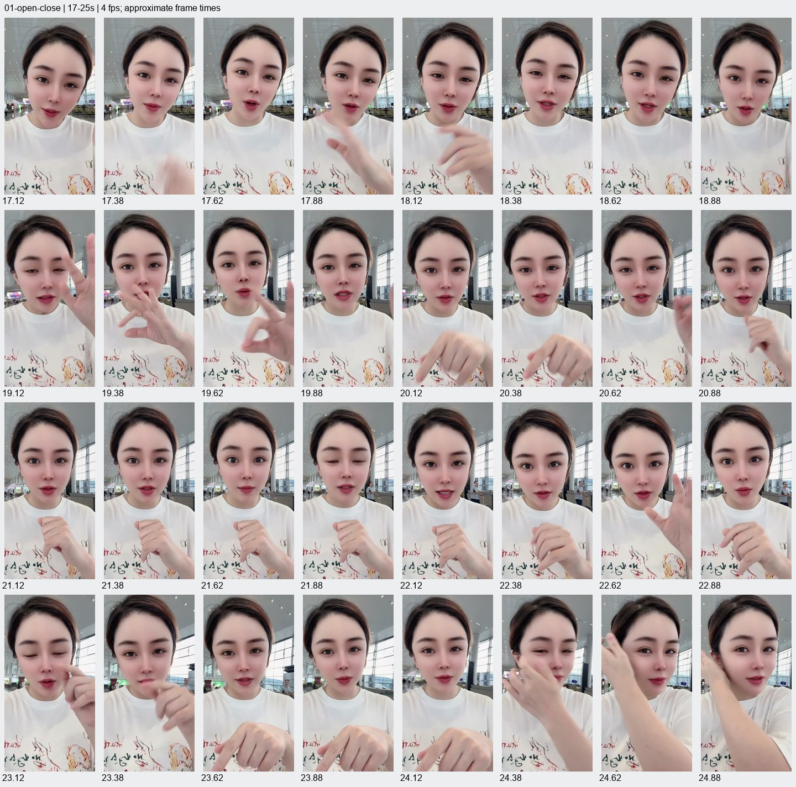 | ||||
| 待确认 | 待核查 | 待核查实词 待核查 近义扩展尚未扩展 | 先短暂侧看，回镜头后把食指举到脸侧，保持片刻，再将指尖转向镜头方向，最后放下。 表情目光：视线从一侧回到镜头，竖指期间头略倾；面部没有持续夸张笑容。 安排时机：需核对台词后确定 | 待补全 单次情境样例 1 次观察 · 1 个来源组 |
查看原话、视频和动作过程先短暂侧看，回镜头后把食指举到脸侧，保持片刻，再将指尖转向镜头方向，最后放下。 单次情境视觉样例，原声未听审。 待补全原因：已保留原片及视觉动作观察；尚未核查原话、情绪语气和台词与动作的对应关系。
原片证据 · 17–25 秒靠窗坐姿的近景自拍；没有展示商品。 待核查文字：尚未核查 当时语气：待核查 台词与动作的关系：待核查 打开原片并定位来源：src-crx-20261107-02 · 独立来源组：family-crx-20261107-02 核查限制：动作与表情描述来自抽样图像序列；区间和节奏为近似，未认证连续播放自然程度。、未听审原音频；不能据 ASR、文件名、字幕或口形推定已经核实的原话与语气。、仅为情境样例，不证明习惯频率；不同文件并不自动代表独立拍摄来源。、未做 Seedance 成片生成、人物相似度或口型验证。、用户确认适用于素材中的初瑞雪本人，不覆盖其他入镜人物；只提取本人的动作。 抽帧证据（不代替连续播放和原声核查）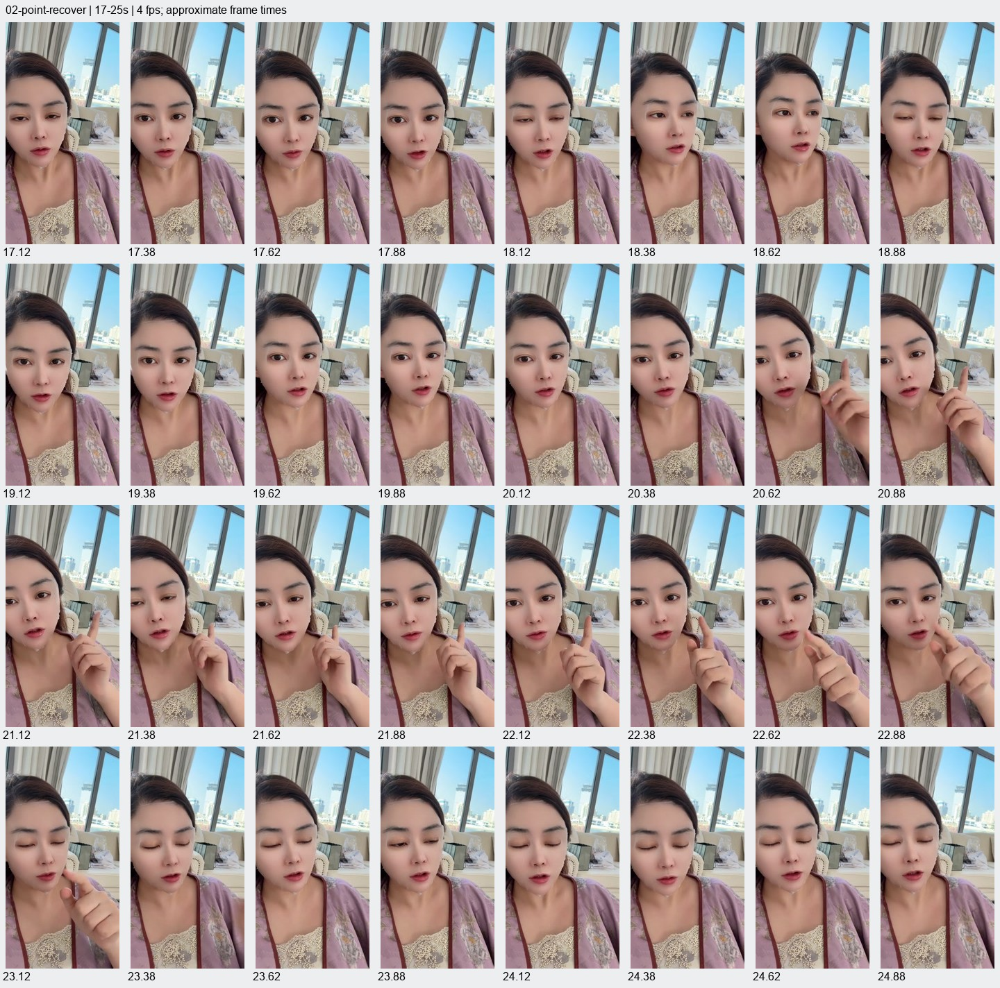 | ||||
| 待确认 | 待核查 | 待核查实词 待核查 近义扩展尚未扩展 | 食指抬离、再次指向对侧手指，随后双手在低位保持接触或相邻。 表情目光：视线主要朝镜头，偶有向上侧看的短变化；头部动作小于手部动作。 安排时机：需核对台词后确定 | 待补全 单次情境样例 1 次观察 · 1 个来源组 |
查看原话、视频和动作过程食指抬离、再次指向对侧手指，随后双手在低位保持接触或相邻。 单次情境视觉样例，原声未听审。 待补全原因：已保留原片及视觉动作观察；尚未核查原话、情绪语气和台词与动作的对应关系。
原片证据 · 233.5–238.9 秒同一化妆整理现场；本人双手在桌面前方，工作人员动作不属于本记录。 待核查文字：尚未核查 当时语气：待核查 台词与动作的关系：待核查 打开原片并定位来源：src-crx-20261107-03 · 独立来源组：family-crx-20261107-03 核查限制：动作与表情描述来自抽样图像序列；区间和节奏为近似，未认证连续播放自然程度。、未听审原音频；不能据 ASR、文件名、字幕或口形推定已经核实的原话与语气。、仅为情境样例，不证明习惯频率；不同文件并不自动代表独立拍摄来源。、未做 Seedance 成片生成、人物相似度或口型验证。、用户确认适用于素材中的初瑞雪本人，不覆盖其他入镜人物；只提取本人的动作。 抽帧证据（不代替连续播放和原声核查）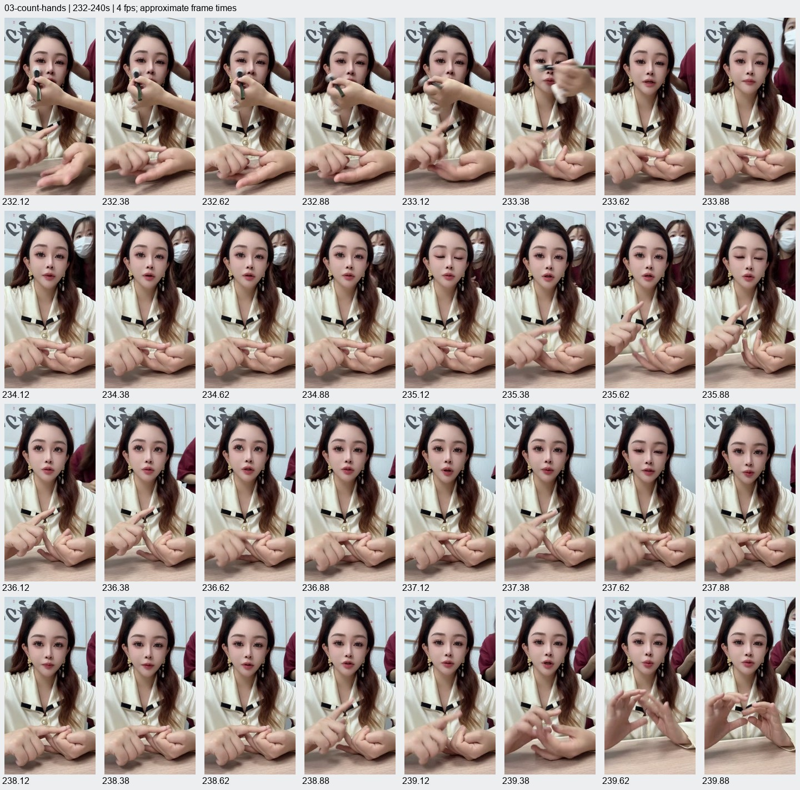 | ||||
| 待确认 | 待核查 | 待核查实词 待核查 近义扩展尚未扩展 | 一只前臂从交叠状态抬起，食指在脸前和侧方作短距离指示，回桌后再抬一次，最后重新交叠。 表情目光：主要看镜头，头部位置较稳定，眨眼间仍保持交流。 安排时机：需核对台词后确定 | 待补全 单次情境样例 1 次观察 · 1 个来源组 |
查看原话、视频和动作过程一只前臂从交叠状态抬起，食指在脸前和侧方作短距离指示，回桌后再抬一次，最后重新交叠。 单次情境视觉样例，原声未听审。 待补全原因：已保留原片及视觉动作观察；尚未核查原话、情绪语气和台词与动作的对应关系。
原片证据 · 10–18 秒化妆整理现场，身后工作人员正在整理头发；只记录本人前臂、手和目光。 待核查文字：尚未核查 当时语气：待核查 台词与动作的关系：待核查 打开原片并定位来源：src-crx-20261107-03 · 独立来源组：family-crx-20261107-03 核查限制：动作与表情描述来自抽样图像序列；区间和节奏为近似，未认证连续播放自然程度。、未听审原音频；不能据 ASR、文件名、字幕或口形推定已经核实的原话与语气。、仅为情境样例，不证明习惯频率；不同文件并不自动代表独立拍摄来源。、未做 Seedance 成片生成、人物相似度或口型验证。、用户确认适用于素材中的初瑞雪本人，不覆盖其他入镜人物；只提取本人的动作。 抽帧证据（不代替连续播放和原声核查）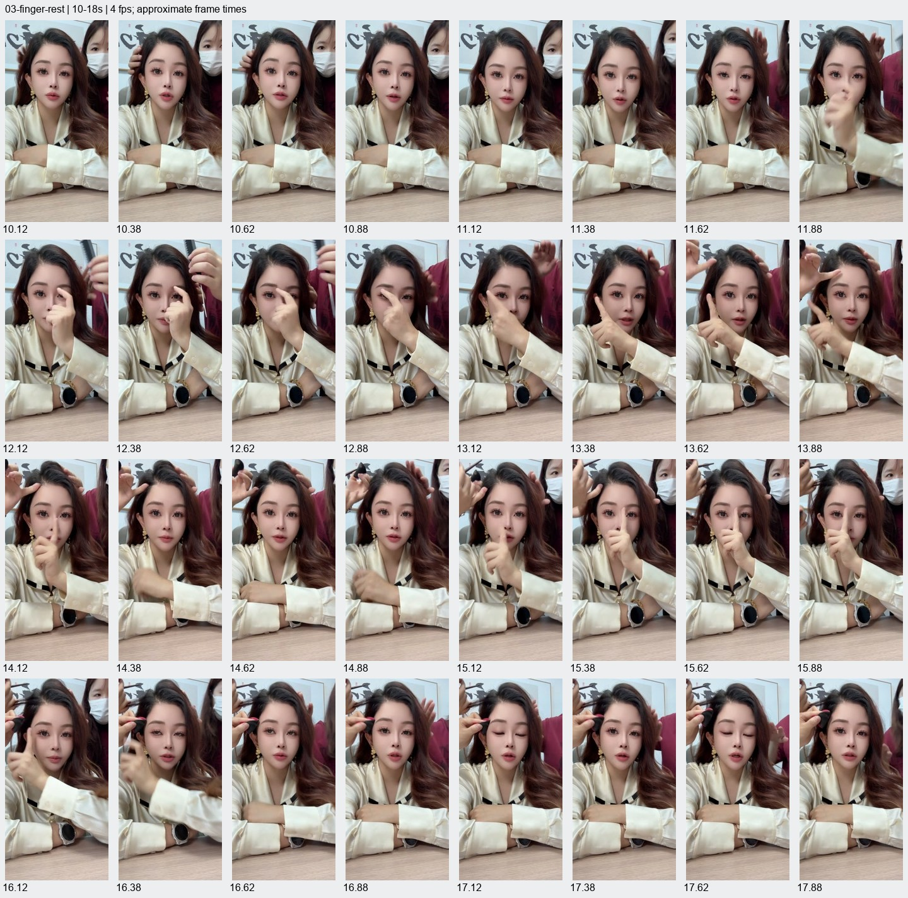 | ||||
| 待确认 | 待核查 | 待核查实词 待核查 近义扩展尚未扩展 | 一手抬到太阳穴附近比V，短暂保持；手指收拢后掌面经过额头和眼前，再移开。 表情目光：比V时有闭眼和单眼眯起，手移开后重新看向镜头。 安排时机：需核对台词后确定 | 待补全 单次情境样例 1 次观察 · 1 个来源组 |
查看原话、视频和动作过程一手抬到太阳穴附近比V，短暂保持；手指收拢后掌面经过额头和眼前，再移开。 单次情境视觉样例，原声未听审。 待补全原因：已保留原片及视觉动作观察；尚未核查原话、情绪语气和台词与动作的对应关系。
原片证据 · 12–20 秒座椅靠背上的半卧自拍，穿粉色上衣；属于特定放松场景样例。 待核查文字：尚未核查 当时语气：待核查 台词与动作的关系：待核查 打开原片并定位来源：src-crx-20261107-04 · 独立来源组：family-crx-20261107-04 核查限制：动作与表情描述来自抽样图像序列；区间和节奏为近似，未认证连续播放自然程度。、未听审原音频；不能据 ASR、文件名、字幕或口形推定已经核实的原话与语气。、仅为情境样例，不证明习惯频率；不同文件并不自动代表独立拍摄来源。、未做 Seedance 成片生成、人物相似度或口型验证。、用户确认适用于素材中的初瑞雪本人，不覆盖其他入镜人物；只提取本人的动作。 抽帧证据（不代替连续播放和原声核查）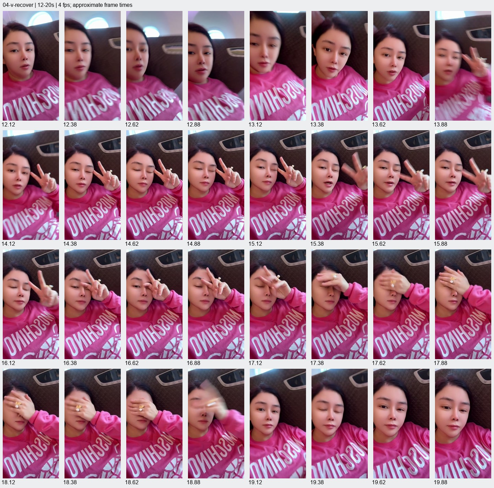 | ||||
| 待确认 | 待核查 | 待核查实词 待核查 近义扩展尚未扩展 | 空闲手掌面向上或斜向镜头展开，手指收拢再展开，短暂指向侧前方，最后松握到下巴以下。 表情目光：目光在侧方和镜头之间切换，回镜头时眉眼抬起，身体保持前倾交流。 安排时机：需核对台词后确定 | 待补全 单次情境样例 1 次观察 · 1 个来源组 |
查看原话、视频和动作过程空闲手掌面向上或斜向镜头展开，手指收拢再展开，短暂指向侧前方，最后松握到下巴以下。 单次情境视觉样例，原声未听审。 待补全原因：已保留原片及视觉动作观察；尚未核查原话、情绪语气和台词与动作的对应关系。
原片证据 · 18–26 秒室内坐姿讲解；一手托持多个容器，另一手参与交流。商品型号未确认。 待核查文字：尚未核查 当时语气：待核查 台词与动作的关系：待核查 打开原片并定位来源：src-crx-20261107-201 · 独立来源组：family-crx-20261107-201 核查限制：动作与表情描述来自抽样图像序列；区间和节奏为近似，未认证连续播放自然程度。、未听审原音频；不能据 ASR、文件名、字幕或口形推定已经核实的原话与语气。、仅为情境样例，不证明习惯频率；不同文件并不自动代表独立拍摄来源。、未做 Seedance 成片生成、人物相似度或口型验证。、用户确认适用于素材中的初瑞雪本人，不覆盖其他入镜人物；只提取本人的动作。 抽帧证据（不代替连续播放和原声核查）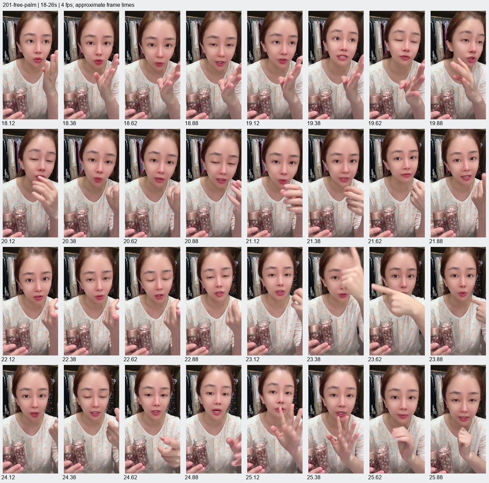 | ||||
| 待确认 | 待核查 | 待核查实词 待核查 近义扩展尚未扩展 | 双手分开，两个食指同时指向各自眼下附近，保持片刻后一起下降。 表情目光：指示时看向镜头，手落下时目光转向桌面。 安排时机：需核对台词后确定 | 待补全 单次情境样例 1 次观察 · 1 个来源组 |
查看原话、视频和动作过程双手分开，两个食指同时指向各自眼下附近，保持片刻后一起下降。 单次情境视觉样例，原声未听审。 待补全原因：已保留原片及视觉动作观察；尚未核查原话、情绪语气和台词与动作的对应关系。
原片证据 · 109.7–113.2 秒产品讲解中的短暂停顿，瓶子已在桌面，双手可短暂离开操作。 待核查文字：尚未核查 当时语气：待核查 台词与动作的关系：待核查 打开原片并定位来源：src-crx-20261107-201 · 独立来源组：family-crx-20261107-201 核查限制：动作与表情描述来自抽样图像序列；区间和节奏为近似，未认证连续播放自然程度。、未听审原音频；不能据 ASR、文件名、字幕或口形推定已经核实的原话与语气。、仅为情境样例，不证明习惯频率；不同文件并不自动代表独立拍摄来源。、未做 Seedance 成片生成、人物相似度或口型验证。、用户确认适用于素材中的初瑞雪本人，不覆盖其他入镜人物；只提取本人的动作。 抽帧证据（不代替连续播放和原声核查）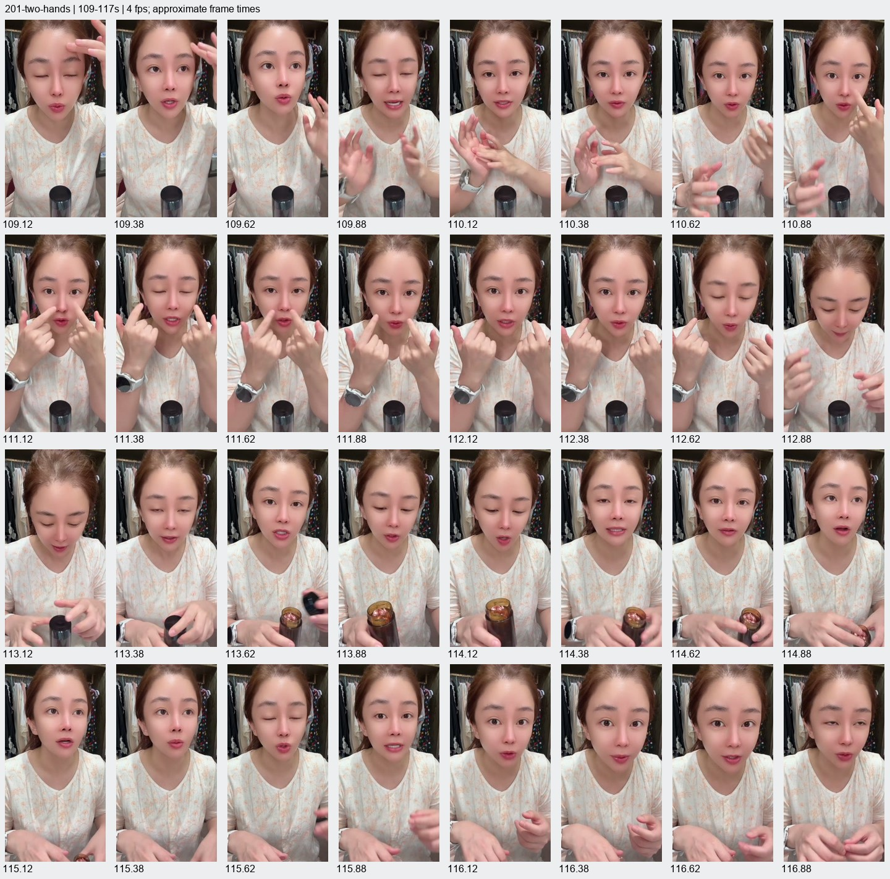 | ||||
| 待确认 | 待核查 | 待核查实词 待核查 近义扩展尚未扩展 | 手先在胸前做较小捏合状，身体随后向镜头前探，食指伸向镜头附近；之后身体退回，手也降低。 表情目光：前探时看向镜头，眉眼较打开；退回时头略偏，继续讲述。 安排时机：需核对台词后确定 | 待补全 单次情境样例 1 次观察 · 1 个来源组 |
查看原话、视频和动作过程手先在胸前做较小捏合状，身体随后向镜头前探，食指伸向镜头附近；之后身体退回，手也降低。 单次情境视觉样例，原声未听审。 待补全原因：已保留原片及视觉动作观察；尚未核查原话、情绪语气和台词与动作的对应关系。
原片证据 · 73–78.2 秒豹纹衣室内讲解，当前选段无明确产品接触；画面带原有字幕。 待核查文字：尚未核查 当时语气：待核查 台词与动作的关系：待核查 打开原片并定位来源：src-crx-20261107-235 · 独立来源组：family-crx-20261107-235 核查限制：动作与表情描述来自抽样图像序列；区间和节奏为近似，未认证连续播放自然程度。、未听审原音频；不能据 ASR、文件名、字幕或口形推定已经核实的原话与语气。、仅为情境样例，不证明习惯频率；不同文件并不自动代表独立拍摄来源。、未做 Seedance 成片生成、人物相似度或口型验证。、用户确认适用于素材中的初瑞雪本人，不覆盖其他入镜人物；只提取本人的动作。 抽帧证据（不代替连续播放和原声核查）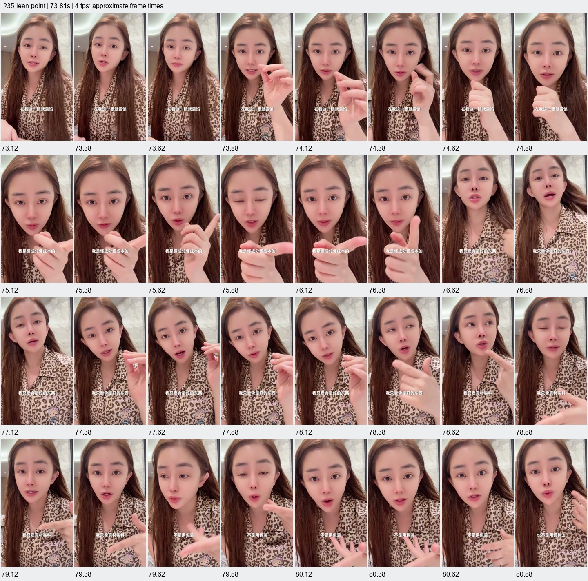 | ||||
| 待确认 | 待核查 | 待核查实词 待核查 近义扩展尚未扩展 | 转头看向身旁的人，稍靠近交流，再转回前方；回正后笑容展开，随后逐渐收小。 表情目光：目光有明确交流对象，笑时眼睛变窄、嘴角抬起，回镜头后仍保留笑意。 安排时机：需核对台词后确定 | 待补全 单次情境样例 1 次观察 · 1 个来源组 |
查看原话、视频和动作过程转头看向身旁的人，稍靠近交流，再转回前方；回正后笑容展开，随后逐渐收小。 单次情境视觉样例，原声未听审。 待补全原因：已保留原片及视觉动作观察；尚未核查原话、情绪语气和台词与动作的对应关系。
原片证据 · 90.5–100 秒与孩子同处候坐区域；只提取初瑞雪的转头和笑容变化，不提取孩子动作。 待核查文字：尚未核查 当时语气：待核查 台词与动作的关系：待核查 打开原片并定位来源：src-crx-20261107-24 · 独立来源组：family-crx-20261107-24 核查限制：动作与表情描述来自抽样图像序列；区间和节奏为近似，未认证连续播放自然程度。、未听审原音频；不能据 ASR、文件名、字幕或口形推定已经核实的原话与语气。、仅为情境样例，不证明习惯频率；不同文件并不自动代表独立拍摄来源。、未做 Seedance 成片生成、人物相似度或口型验证。、用户确认适用于素材中的初瑞雪本人，不覆盖其他入镜人物；只提取本人的动作。 | ||||
| 待确认 | 待核查 | 待核查实词 待核查 近义扩展尚未扩展 | 手在脸侧比V并保持，随后收成单指和松握状，在嘴边附近短暂停留，再降至胸前。 表情目光：视线以镜头为主，中间短暂侧看，表情从轻笑回到讲述状态。 安排时机：需核对台词后确定 | 待补全 单次情境样例 1 次观察 · 1 个来源组 |
查看原话、视频和动作过程手在脸侧比V并保持，随后收成单指和松握状，在嘴边附近短暂停留，再降至胸前。 单次情境视觉样例，原声未听审。 待补全原因：已保留原片及视觉动作观察；尚未核查原话、情绪语气和台词与动作的对应关系。
原片证据 · 180.8–188 秒同一候坐自拍的后段；身旁有人，但本观察只记录本人单手。 待核查文字：尚未核查 当时语气：待核查 台词与动作的关系：待核查 打开原片并定位来源：src-crx-20261107-24 · 独立来源组：family-crx-20261107-24 核查限制：动作与表情描述来自抽样图像序列；区间和节奏为近似，未认证连续播放自然程度。、未听审原音频；不能据 ASR、文件名、字幕或口形推定已经核实的原话与语气。、仅为情境样例，不证明习惯频率；不同文件并不自动代表独立拍摄来源。、未做 Seedance 成片生成、人物相似度或口型验证。、用户确认适用于素材中的初瑞雪本人，不覆盖其他入镜人物；只提取本人的动作。 抽帧证据（不代替连续播放和原声核查）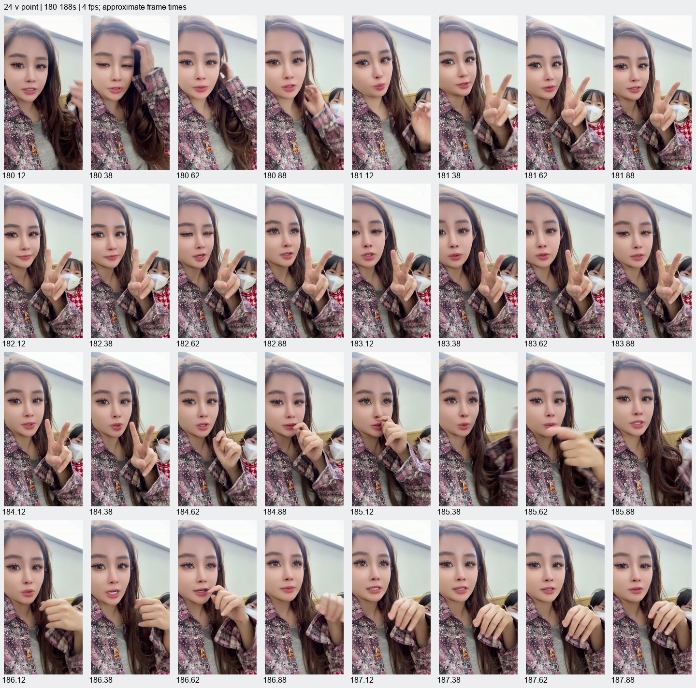 | ||||
| 待确认 | 待核查 | 待核查实词 待核查 近义扩展尚未扩展 | 上身退回坐姿，之后略前探；中途抬眼看上方，再回到镜头。 表情目光：眼神与眉眼变化承担交流，短暂眨眼和抬眉；没有用大量手势填充。 安排时机：需核对台词后确定 | 待补全 单次情境样例 1 次观察 · 1 个来源组 |
查看原话、视频和动作过程上身退回坐姿，之后略前探；中途抬眼看上方，再回到镜头。 单次情境视觉样例，原声未听审。 待补全原因：已保留原片及视觉动作观察；尚未核查原话、情绪语气和台词与动作的对应关系。
原片证据 · 17–25 秒桌前裹披肩坐姿；手大多位于披肩内或镜外。 待核查文字：尚未核查 当时语气：待核查 台词与动作的关系：待核查 打开原片并定位来源：src-crx-20261107-280 · 独立来源组：family-crx-20261107-280 核查限制：动作与表情描述来自抽样图像序列；区间和节奏为近似，未认证连续播放自然程度。、未听审原音频；不能据 ASR、文件名、字幕或口形推定已经核实的原话与语气。、仅为情境样例，不证明习惯频率；不同文件并不自动代表独立拍摄来源。、未做 Seedance 成片生成、人物相似度或口型验证。、用户确认适用于素材中的初瑞雪本人，不覆盖其他入镜人物；只提取本人的动作。 抽帧证据（不代替连续播放和原声核查）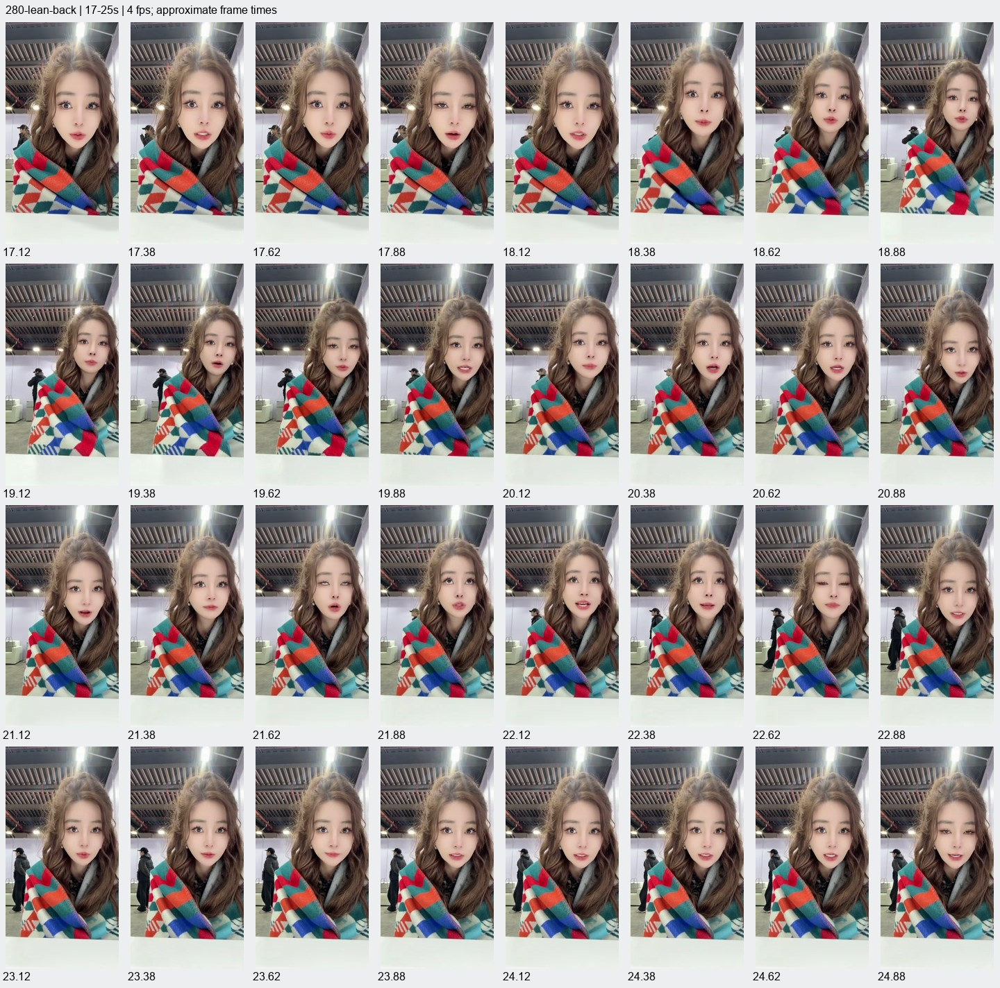 | ||||
| 待确认 | 待核查 | 待核查实词 待核查 近义扩展尚未扩展 | 开掌举到头侧上方并停留，随后落回胸前，再抬到耳侧附近。 表情目光：看向镜头，头略侧倾，嘴角有轻微笑意。 安排时机：需核对台词后确定 | 待补全 单次情境样例 1 次观察 · 1 个来源组 |
查看原话、视频和动作过程开掌举到头侧上方并停留，随后落回胸前，再抬到耳侧附近。 单次情境视觉样例，原声未听审。 待补全原因：已保留原片及视觉动作观察；尚未核查原话、情绪语气和台词与动作的对应关系。
原片证据 · 0–5.2 秒黄色服装的造型现场；后方他人整理头发不属于本人动作。 待核查文字：尚未核查 当时语气：待核查 台词与动作的关系：待核查 打开原片并定位来源：src-crx-20261107-282 · 独立来源组：family-crx-20261107-282 核查限制：动作与表情描述来自抽样图像序列；区间和节奏为近似，未认证连续播放自然程度。、未听审原音频；不能据 ASR、文件名、字幕或口形推定已经核实的原话与语气。、仅为情境样例，不证明习惯频率；不同文件并不自动代表独立拍摄来源。、未做 Seedance 成片生成、人物相似度或口型验证。、用户确认适用于素材中的初瑞雪本人，不覆盖其他入镜人物；只提取本人的动作。 抽帧证据（不代替连续播放和原声核查）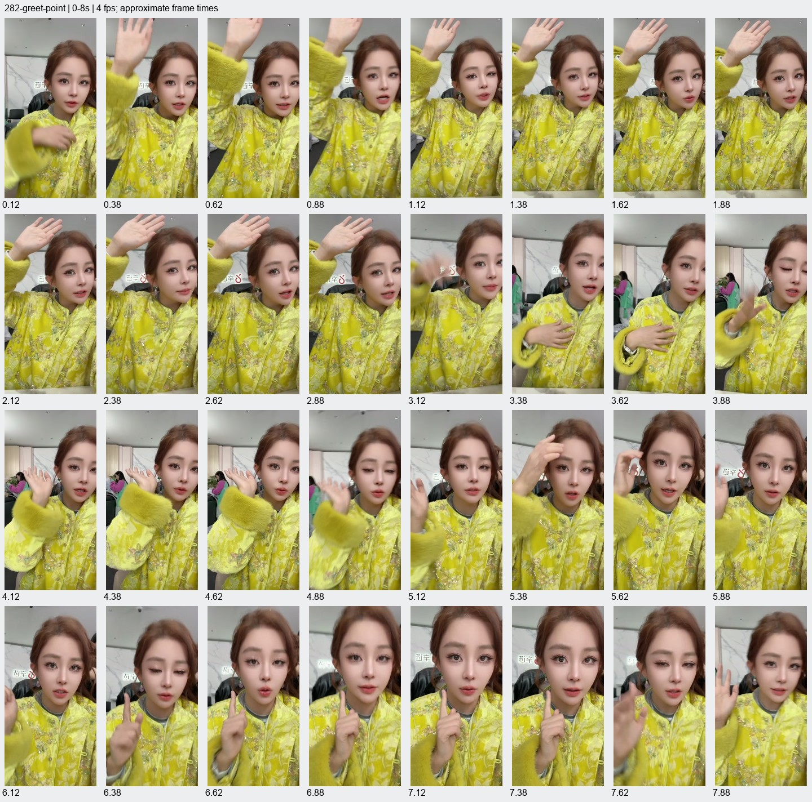 | ||||
| 待确认 | 待核查 | 待核查实词 待核查 近义扩展尚未扩展 | 空闲手抬至胸上方，张开后向镜头方向短送，回到胸前；随后再开掌一次并放下。 表情目光：目光短暂侧上方后回镜头；面膜遮挡限制了细微面部判断。 安排时机：需核对台词后确定 | 待补全 单次情境样例 1 次观察 · 1 个来源组 |
查看原话、视频和动作过程空闲手抬至胸上方，张开后向镜头方向短送，回到胸前；随后再开掌一次并放下。 单次情境视觉样例，原声未听审。 待补全原因：已保留原片及视觉动作观察；尚未核查原话、情绪语气和台词与动作的对应关系。
原片证据 · 26.1–30.8 秒已经贴好面膜的室内近景，只记录空闲手和视线，不提取贴膜或取用教程。 待核查文字：尚未核查 当时语气：待核查 台词与动作的关系：待核查 打开原片并定位来源：src-crx-20261107-606 · 独立来源组：family-crx-20261107-606 核查限制：动作与表情描述来自抽样图像序列；区间和节奏为近似，未认证连续播放自然程度。、未听审原音频；不能据 ASR、文件名、字幕或口形推定已经核实的原话与语气。、仅为情境样例，不证明习惯频率；不同文件并不自动代表独立拍摄来源。、未做 Seedance 成片生成、人物相似度或口型验证。、用户确认适用于素材中的初瑞雪本人，不覆盖其他入镜人物；只提取本人的动作。 抽帧证据（不代替连续播放和原声核查）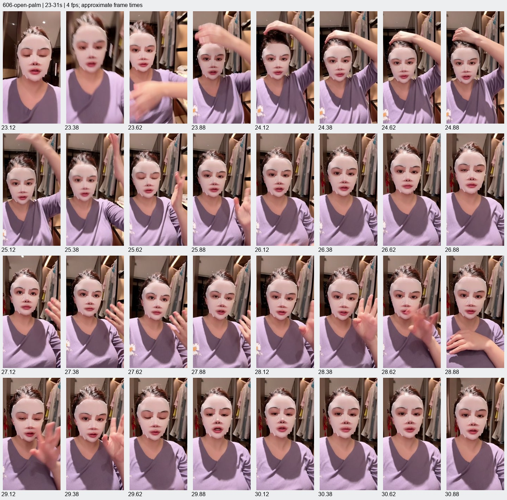 | ||||
| 待确认 | 待核查 | 待核查实词 待核查 近义扩展尚未扩展 | 头和目光下移到当前操作区域，随后抬眼看镜头，头部回正。 表情目光：没有持续笑容，主要是眼神从下方转回观众，伴随眨眼。 安排时机：需核对台词后确定 | 待补全 单次情境样例 1 次观察 · 1 个来源组 |
查看原话、视频和动作过程头和目光下移到当前操作区域，随后抬眼看镜头，头部回正。 单次情境视觉样例，原声未听审。 待补全原因：已保留原片及视觉动作观察；尚未核查原话、情绪语气和台词与动作的对应关系。
原片证据 · 48.5–50.5 秒额头护理过程中的短暂间隙；原片包含安瓶类物体和涂抹，具体商品身份未核对。 待核查文字：尚未核查 当时语气：待核查 台词与动作的关系：待核查 打开原片并定位来源：src-crx-20261107-654 · 独立来源组：family-crx-20261107-654 核查限制：动作与表情描述来自抽样图像序列；区间和节奏为近似，未认证连续播放自然程度。、未听审原音频；不能据 ASR、文件名、字幕或口形推定已经核实的原话与语气。、仅为情境样例，不证明习惯频率；不同文件并不自动代表独立拍摄来源。、未做 Seedance 成片生成、人物相似度或口型验证。、用户确认适用于素材中的初瑞雪本人，不覆盖其他入镜人物；只提取本人的动作。 抽帧证据（不代替连续播放和原声核查）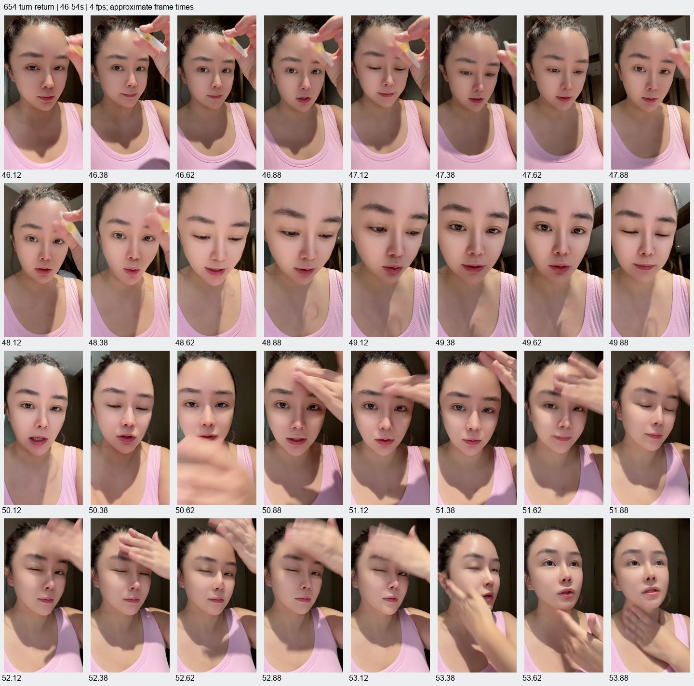 | ||||
| 待确认 | 待核查 | 待核查实词 待核查 近义扩展尚未扩展 | 保持手部真实接触时，目光先侧看再回镜头；短暂低头看双手，抬眼后双掌展开，随后合回。 表情目光：目光在操作目标、镜头与侧方之间切换，回镜头时头略侧倾。 安排时机：需核对台词后确定 | 待补全 单次情境样例 1 次观察 · 1 个来源组 |
查看原话、视频和动作过程保持手部真实接触时，目光先侧看再回镜头；短暂低头看双手，抬眼后双掌展开，随后合回。 单次情境视觉样例，原声未听审。 待补全原因：已保留原片及视觉动作观察；尚未核查原话、情绪语气和台词与动作的对应关系。
原片证据 · 43–50.8 秒站姿护理操作后段；双手正在接触、摩擦，可能有前序残留，不能当作凭空搓手的模板。 待核查文字：尚未核查 当时语气：待核查 台词与动作的关系：待核查 打开原片并定位来源：src-crx-20261107-657 · 独立来源组：family-crx-20261107-657 核查限制：动作与表情描述来自抽样图像序列；区间和节奏为近似，未认证连续播放自然程度。、未听审原音频；不能据 ASR、文件名、字幕或口形推定已经核实的原话与语气。、仅为情境样例，不证明习惯频率；不同文件并不自动代表独立拍摄来源。、未做 Seedance 成片生成、人物相似度或口型验证。、用户确认适用于素材中的初瑞雪本人，不覆盖其他入镜人物；只提取本人的动作。 抽帧证据（不代替连续播放和原声核查）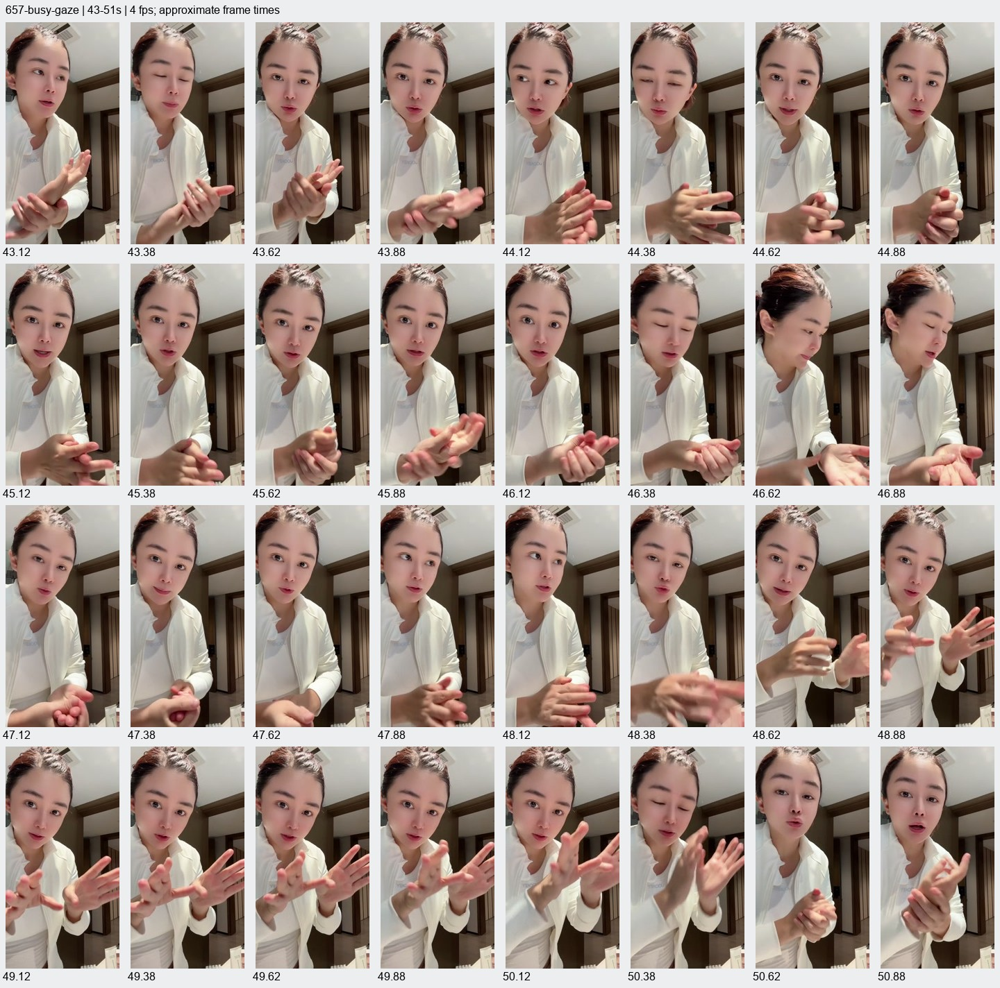 | ||||
| 待确认 | 待核查 | 待核查实词 待核查 近义扩展尚未扩展 | 短暂睁眼后，手在胸前抬起作一次小指示，随后降低；眼睛再次闭合。 表情目光：约18.6秒短暂睁眼，之后恢复闭眼；不能据此判断舒适程度或功效。 安排时机：需核对台词后确定 | 待补全 单次情境样例 1 次观察 · 1 个来源组 |
查看原话、视频和动作过程短暂睁眼后，手在胸前抬起作一次小指示，随后降低；眼睛再次闭合。 单次情境视觉样例，原声未听审。 待补全原因：已保留原片及视觉动作观察；尚未核查原话、情绪语气和台词与动作的对应关系。
原片证据 · 16–24 秒侧卧接受耳部护理的自拍；只记录本人眼部和胸前活动手，旁人操作不属于本记录。 待核查文字：尚未核查 当时语气：待核查 台词与动作的关系：待核查 打开原片并定位来源：src-crx-20261107-845 · 独立来源组：family-crx-20261107-845 核查限制：动作与表情描述来自抽样图像序列；区间和节奏为近似，未认证连续播放自然程度。、未听审原音频；不能据 ASR、文件名、字幕或口形推定已经核实的原话与语气。、仅为情境样例，不证明习惯频率；不同文件并不自动代表独立拍摄来源。、未做 Seedance 成片生成、人物相似度或口型验证。、用户确认适用于素材中的初瑞雪本人，不覆盖其他入镜人物；只提取本人的动作。 抽帧证据（不代替连续播放和原声核查）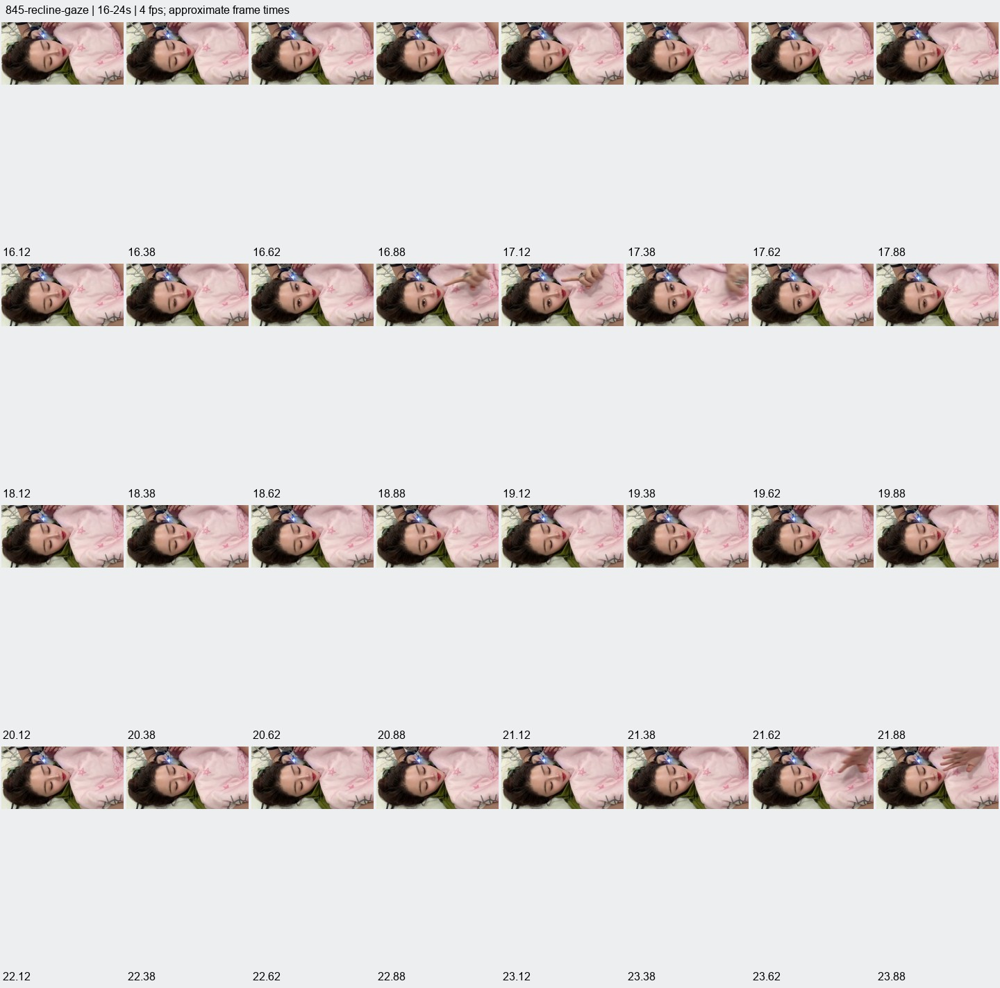 | ||||
| 待确认 | 待核查 | 待核查实词 待核查 近义扩展尚未扩展 | 头和目光由侧方回镜头，随后再侧看，再回到镜头附近。 表情目光：带轻微笑意，侧看和回视有明确变化。 安排时机：需核对台词后确定 | 待补全 单次情境样例 1 次观察 · 1 个来源组 |
查看原话、视频和动作过程头和目光由侧方回镜头，随后再侧看，再回到镜头附近。 单次情境视觉样例，原声未听审。 待补全原因：已保留原片及视觉动作观察；尚未核查原话、情绪语气和台词与动作的对应关系。
原片证据 · 20–28 秒仓储空间内移动自拍；画面位移不单独证明步行，其他人物不属于本记录。 待核查文字：尚未核查 当时语气：待核查 台词与动作的关系：待核查 打开原片并定位来源：src-crx-20261107-905 · 独立来源组：family-crx-20261107-905 核查限制：动作与表情描述来自抽样图像序列；区间和节奏为近似，未认证连续播放自然程度。、未听审原音频；不能据 ASR、文件名、字幕或口形推定已经核实的原话与语气。、仅为情境样例，不证明习惯频率；不同文件并不自动代表独立拍摄来源。、未做 Seedance 成片生成、人物相似度或口型验证。、用户确认适用于素材中的初瑞雪本人，不覆盖其他入镜人物；只提取本人的动作。 抽帧证据（不代替连续播放和原声核查）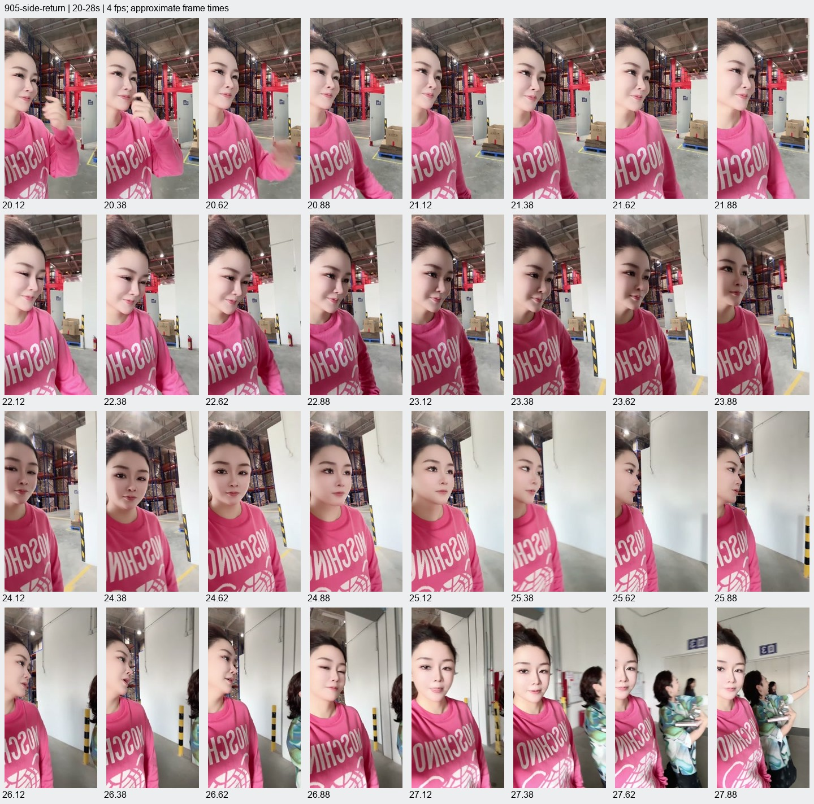 | ||||
| 待确认 | 待核查 | 待核查实词 待核查 近义扩展尚未扩展 | 本人开掌抬到脸前，短暂经过后降回胸前；人物与镜头距离略增。 表情目光：表情带笑，目光围绕镜头，手经过时短暂遮挡部分脸。 安排时机：需核对台词后确定 | 待补全 单次情境样例 1 次观察 · 1 个来源组 |
查看原话、视频和动作过程本人开掌抬到脸前，短暂经过后降回胸前；人物与镜头距离略增。 单次情境视觉样例，原声未听审。 待补全原因：已保留原片及视觉动作观察；尚未核查原话、情绪语气和台词与动作的对应关系。
原片证据 · 8.1–10.8 秒紫色上衣的造型现场；后续整理头发与工作人员动作不纳入。 待核查文字：尚未核查 当时语气：待核查 台词与动作的关系：待核查 打开原片并定位来源：src-crx-20261107-918 · 独立来源组：family-crx-20261107-918 核查限制：动作与表情描述来自抽样图像序列；区间和节奏为近似，未认证连续播放自然程度。、未听审原音频；不能据 ASR、文件名、字幕或口形推定已经核实的原话与语气。、仅为情境样例，不证明习惯频率；不同文件并不自动代表独立拍摄来源。、未做 Seedance 成片生成、人物相似度或口型验证。、用户确认适用于素材中的初瑞雪本人，不覆盖其他入镜人物；只提取本人的动作。 抽帧证据（不代替连续播放和原声核查）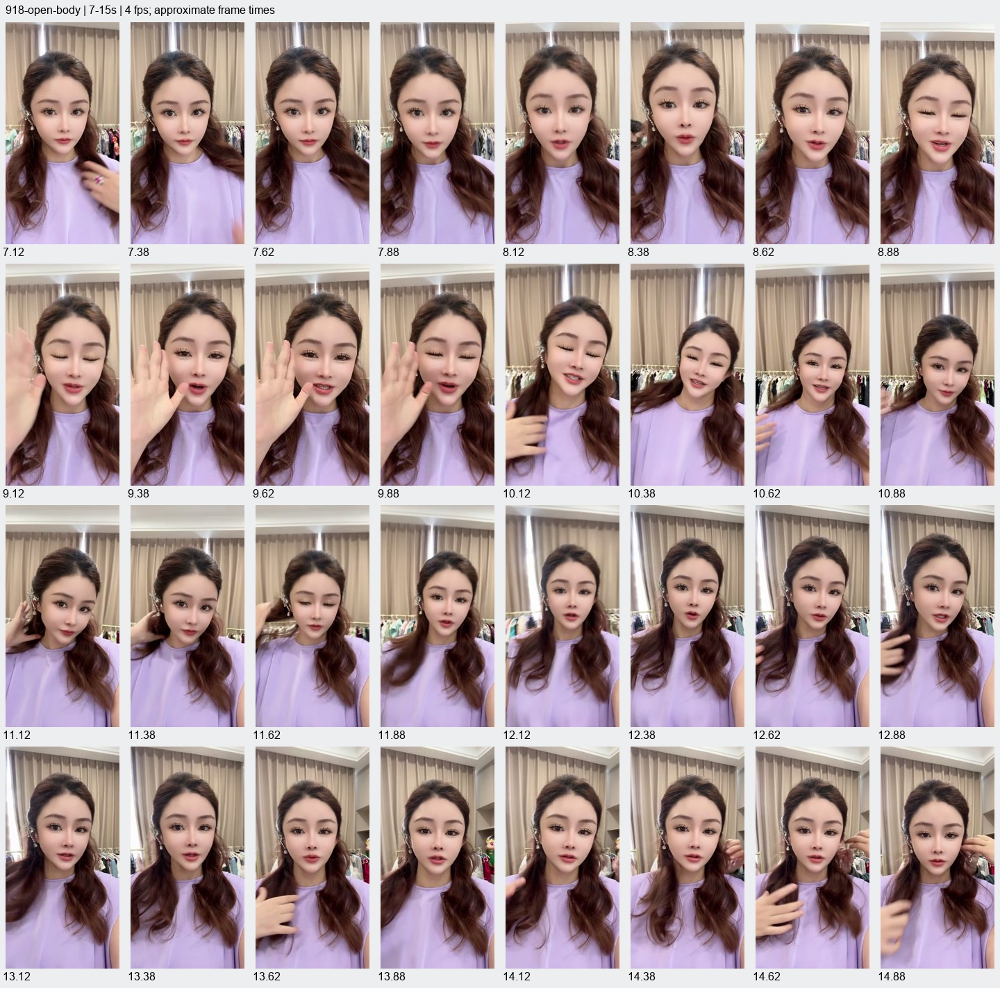 | ||||
| 待确认 | 待核查 | 待核查实词 待核查 近义扩展尚未扩展 | 一手抬起比V，短停后收成向下指示，再放低，中间短暂侧看。 表情目光：多数时间看镜头，约30.6–31秒侧看，之后回视。 安排时机：需核对台词后确定 | 待补全 单次情境样例 1 次观察 · 1 个来源组 |
查看原话、视频和动作过程一手抬起比V，短停后收成向下指示，再放低，中间短暂侧看。 单次情境视觉样例，原声未听审。 待补全原因：已保留原片及视觉动作观察；尚未核查原话、情绪语气和台词与动作的对应关系。
原片证据 · 27–32.6 秒机场内移动自拍，脸上有原有贴纸；不包含原片末尾尚未收回的第二次比V。 待核查文字：尚未核查 当时语气：待核查 台词与动作的关系：待核查 打开原片并定位来源：src-crx-20261107-920 · 独立来源组：family-crx-20261107-920 核查限制：动作与表情描述来自抽样图像序列；区间和节奏为近似，未认证连续播放自然程度。、未听审原音频；不能据 ASR、文件名、字幕或口形推定已经核实的原话与语气。、仅为情境样例，不证明习惯频率；不同文件并不自动代表独立拍摄来源。、未做 Seedance 成片生成、人物相似度或口型验证。、用户确认适用于素材中的初瑞雪本人，不覆盖其他入镜人物；只提取本人的动作。 抽帧证据（不代替连续播放和原声核查）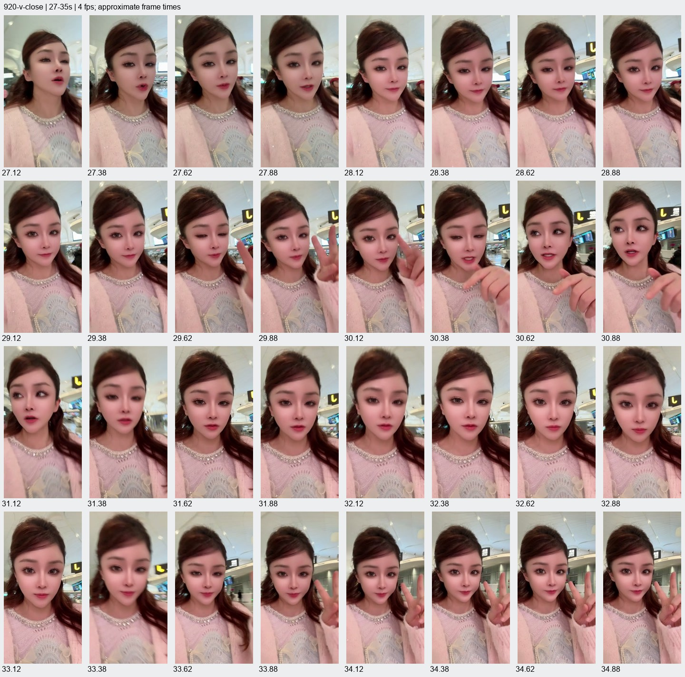 | ||||
| 待确认 | 待核查 | 待核查实词 待核查 近义扩展尚未扩展 | 本人开掌短暂进入下半脸前方，随后降低，头没有随手大幅摇动。 表情目光：视线主要面向镜头，表情和眨眼继续变化。 安排时机：需核对台词后确定 | 待补全 单次情境样例 1 次观察 · 1 个来源组 |
查看原话、视频和动作过程本人开掌短暂进入下半脸前方，随后降低，头没有随手大幅摇动。 单次情境视觉样例，原声未听审。 待补全原因：已保留原片及视觉动作观察；尚未核查原话、情绪语气和台词与动作的对应关系。
原片证据 · 31.5–35.8 秒粉色礼服造型现场；此前太阳穴旁工作人员的手不纳入本人动作。 待核查文字：尚未核查 当时语气：待核查 台词与动作的关系：待核查 打开原片并定位来源：src-crx-20261107-940 · 独立来源组：family-crx-20261107-940 核查限制：动作与表情描述来自抽样图像序列；区间和节奏为近似，未认证连续播放自然程度。、未听审原音频；不能据 ASR、文件名、字幕或口形推定已经核实的原话与语气。、仅为情境样例，不证明习惯频率；不同文件并不自动代表独立拍摄来源。、未做 Seedance 成片生成、人物相似度或口型验证。、用户确认适用于素材中的初瑞雪本人，不覆盖其他入镜人物；只提取本人的动作。 抽帧证据（不代替连续播放和原声核查）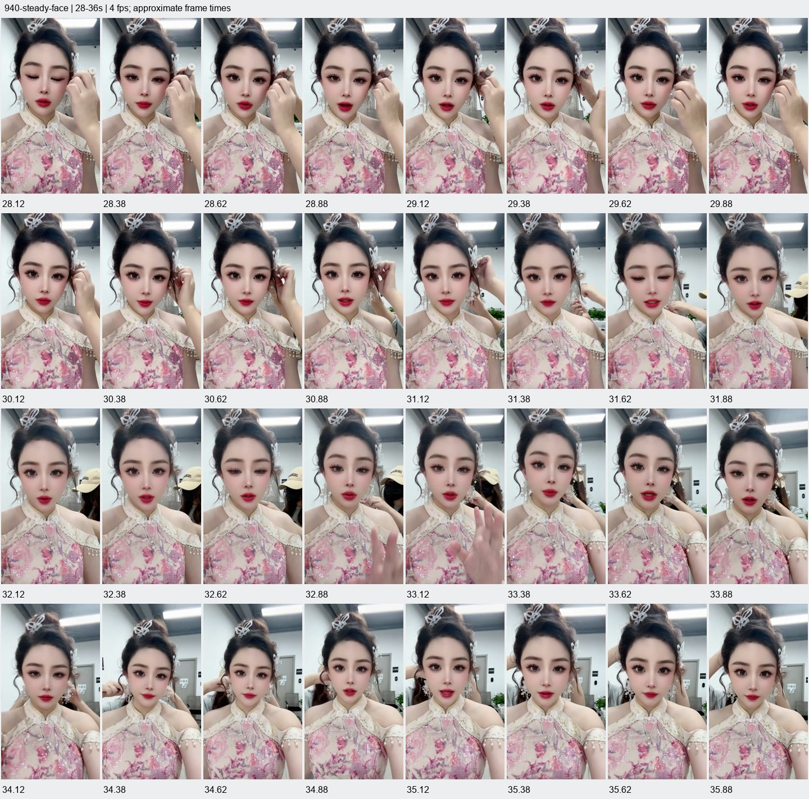 | ||||
| 待确认 | 待核查 | 待核查实词 待核查 近义扩展尚未扩展 | 一手抬到胸前作捏合状小手势，放下后间隔片刻，再开掌横向短扫并回落。 表情目光：主要看镜头，眉眼随交流变化，头位相对稳定。 安排时机：需核对台词后确定 | 待补全 单次情境样例 1 次观察 · 1 个来源组 |
查看原话、视频和动作过程一手抬到胸前作捏合状小手势，放下后间隔片刻，再开掌横向短扫并回落。 单次情境视觉样例，原声未听审。 待补全原因：已保留原片及视觉动作观察；尚未核查原话、情绪语气和台词与动作的对应关系。
原片证据 · 14–20.8 秒红色上衣、珍珠项链的坐姿讲述；此选段与后续产品操作分开记录。 待核查文字：尚未核查 当时语气：待核查 台词与动作的关系：待核查 打开原片并定位来源：src-crx-20261107-941 · 独立来源组：family-crx-20261107-red-event 核查限制：动作与表情描述来自抽样图像序列；区间和节奏为近似，未认证连续播放自然程度。、未听审原音频；不能据 ASR、文件名、字幕或口形推定已经核实的原话与语气。、仅为情境样例，不证明习惯频率；不同文件并不自动代表独立拍摄来源。、未做 Seedance 成片生成、人物相似度或口型验证。、用户确认适用于素材中的初瑞雪本人，不覆盖其他入镜人物；只提取本人的动作。 抽帧证据（不代替连续播放和原声核查）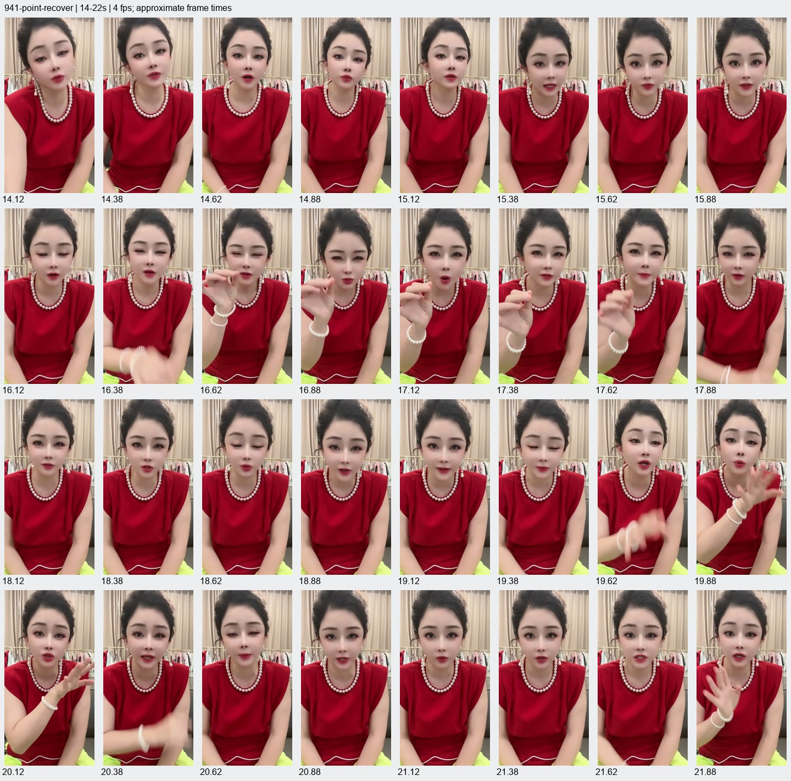 | ||||
| 待确认 | 待核查 | 待核查实词 待核查 近义扩展尚未扩展 | 双掌短展开，随后合拢交握到下巴下方，停留后降低并改变手位。 表情目光：目光朝镜头，头略前倾；双手合拢不证明拍掌或发声。 安排时机：需核对台词后确定 | 待补全 单次情境样例 1 次观察 · 1 个来源组 |
查看原话、视频和动作过程双掌短展开，随后合拢交握到下巴下方，停留后降低并改变手位。 单次情境视觉样例，原声未听审。 待补全原因：已保留原片及视觉动作观察；尚未核查原话、情绪语气和台词与动作的对应关系。
原片证据 · 58–60.8 秒同一红衣视频的产品操作后段，双手延续前序接触状态；不迁移未知产品用法。 待核查文字：尚未核查 当时语气：待核查 台词与动作的关系：待核查 打开原片并定位来源：src-crx-20261107-941 · 独立来源组：family-crx-20261107-red-event 核查限制：动作与表情描述来自抽样图像序列；区间和节奏为近似，未认证连续播放自然程度。、未听审原音频；不能据 ASR、文件名、字幕或口形推定已经核实的原话与语气。、仅为情境样例，不证明习惯频率；不同文件并不自动代表独立拍摄来源。、未做 Seedance 成片生成、人物相似度或口型验证。、用户确认适用于素材中的初瑞雪本人，不覆盖其他入镜人物；只提取本人的动作。 抽帧证据（不代替连续播放和原声核查）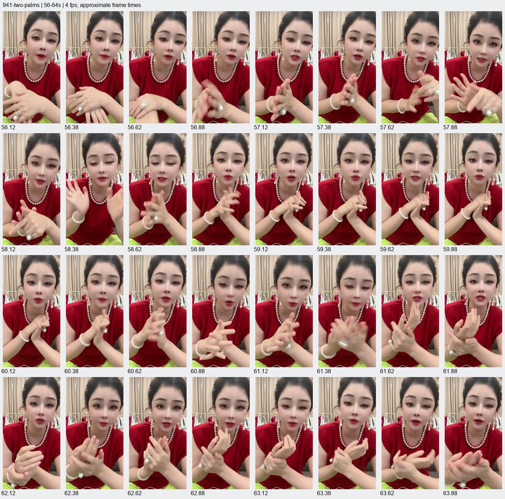 | ||||
| 待确认 | 待核查 | 待核查实词 待核查 近义扩展尚未扩展 | 头小幅侧倾后回到较正位置，眉眼随讲述变化。 表情目光：目光围绕镜头，眨眼与眉眼变化可见。 安排时机：需核对台词后确定 | 待补全 单次情境样例 1 次观察 · 1 个来源组 |
查看原话、视频和动作过程头小幅侧倾后回到较正位置，眉眼随讲述变化。 单次情境视觉样例，原声未听审。 待补全原因：已保留原片及视觉动作观察；尚未核查原话、情绪语气和台词与动作的对应关系。
原片证据 · 40–44 秒活动后台近景自拍；此前另一位讲述者和37–39秒拨发不纳入本段。 待核查文字：尚未核查 当时语气：待核查 台词与动作的关系：待核查 打开原片并定位来源：src-crx-20261107-943 · 独立来源组：family-crx-20261107-red-event 核查限制：动作与表情描述来自抽样图像序列；区间和节奏为近似，未认证连续播放自然程度。、未听审原音频；不能据 ASR、文件名、字幕或口形推定已经核实的原话与语气。、仅为情境样例，不证明习惯频率；不同文件并不自动代表独立拍摄来源。、未做 Seedance 成片生成、人物相似度或口型验证。、用户确认适用于素材中的初瑞雪本人，不覆盖其他入镜人物；只提取本人的动作。 抽帧证据（不代替连续播放和原声核查）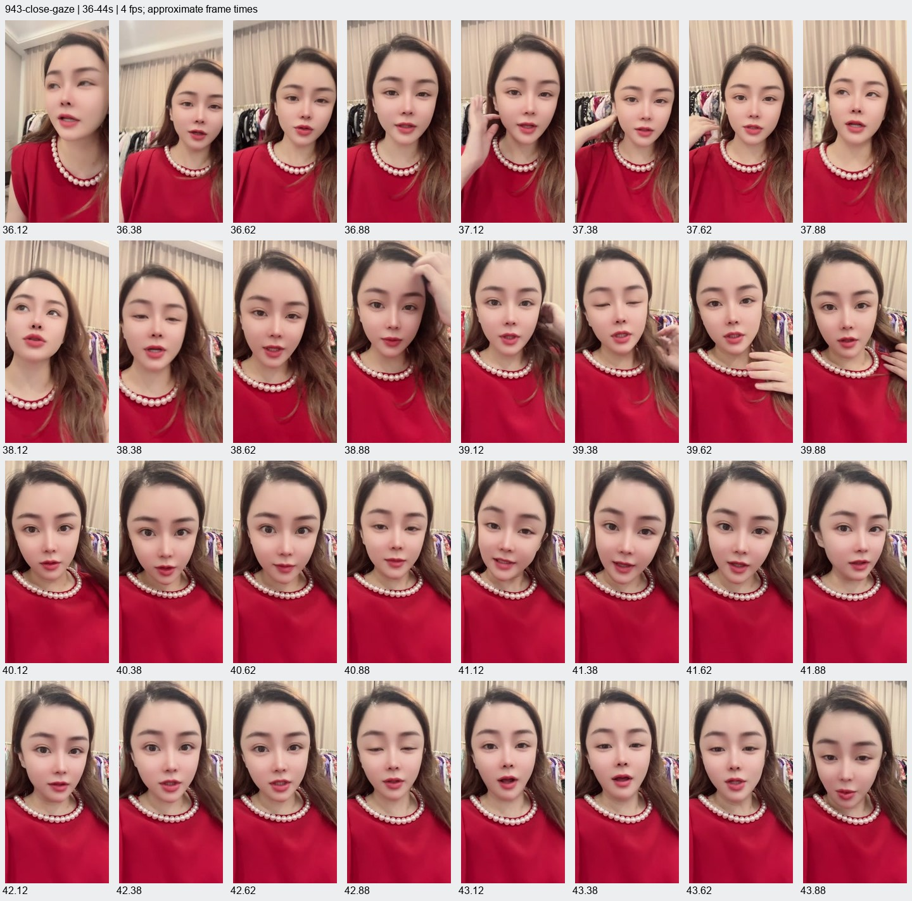 | ||||
| 待确认 | 待核查 | 待核查实词 待核查 近义扩展尚未扩展 | 笑容扩大后，本人一手抬起短遮嘴部，随后降低。 表情目光：笑时眼睛变窄；落手后仍带笑，恢复讲述时的口部变化。 安排时机：需核对台词后确定 | 待补全 单次情境样例 1 次观察 · 1 个来源组 |
查看原话、视频和动作过程笑容扩大后，本人一手抬起短遮嘴部，随后降低。 单次情境视觉样例，原声未听审。 待补全原因：已保留原片及视觉动作观察；尚未核查原话、情绪语气和台词与动作的对应关系。
原片证据 · 18.3–21.1 秒红色礼服、花饰造型现场；工作人员梳发的手与本人活动手分开。 待核查文字：尚未核查 当时语气：待核查 台词与动作的关系：待核查 打开原片并定位来源：src-crx-20261107-949 · 独立来源组：family-crx-20261107-949 核查限制：动作与表情描述来自抽样图像序列；区间和节奏为近似，未认证连续播放自然程度。、未听审原音频；不能据 ASR、文件名、字幕或口形推定已经核实的原话与语气。、仅为情境样例，不证明习惯频率；不同文件并不自动代表独立拍摄来源。、未做 Seedance 成片生成、人物相似度或口型验证。、用户确认适用于素材中的初瑞雪本人，不覆盖其他入镜人物；只提取本人的动作。 抽帧证据（不代替连续播放和原声核查）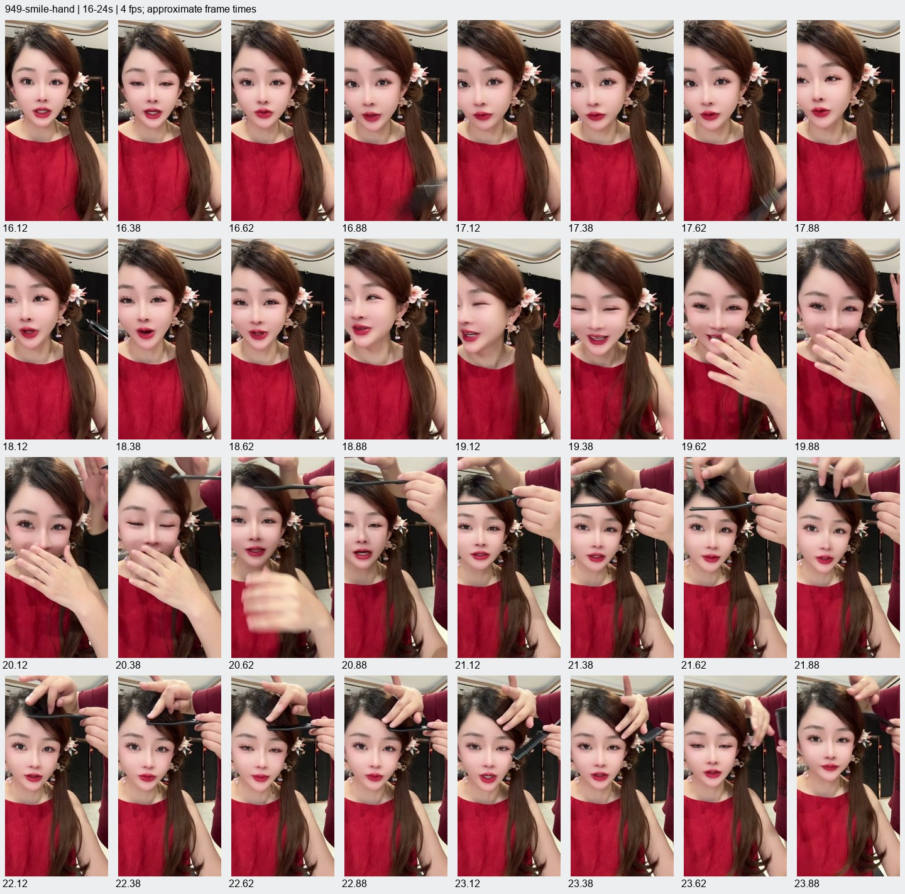 | ||||
| 待确认 | 待核查 | 待核查实词 待核查 近义扩展尚未扩展 | 目光和头位短暂朝前方或侧上方偏转，再回镜头，多次交替。 表情目光：约7.3、9.2、11.6秒看环境；8.1、10.4、12.4秒附近回镜头。 安排时机：需核对台词后确定 | 待补全 单次情境样例 1 次观察 · 1 个来源组 |
查看原话、视频和动作过程目光和头位短暂朝前方或侧上方偏转，再回镜头，多次交替。 单次情境视觉样例，原声未听审。 待补全原因：已保留原片及视觉动作观察；尚未核查原话、情绪语气和台词与动作的对应关系。
原片证据 · 6–14 秒白色上衣的机场移动自拍，手主要在镜外。 待核查文字：尚未核查 当时语气：待核查 台词与动作的关系：待核查 打开原片并定位来源：src-crx-20261107-950 · 独立来源组：family-crx-20261107-950 核查限制：动作与表情描述来自抽样图像序列；区间和节奏为近似，未认证连续播放自然程度。、未听审原音频；不能据 ASR、文件名、字幕或口形推定已经核实的原话与语气。、仅为情境样例，不证明习惯频率；不同文件并不自动代表独立拍摄来源。、未做 Seedance 成片生成、人物相似度或口型验证。、用户确认适用于素材中的初瑞雪本人，不覆盖其他入镜人物；只提取本人的动作。 抽帧证据（不代替连续播放和原声核查）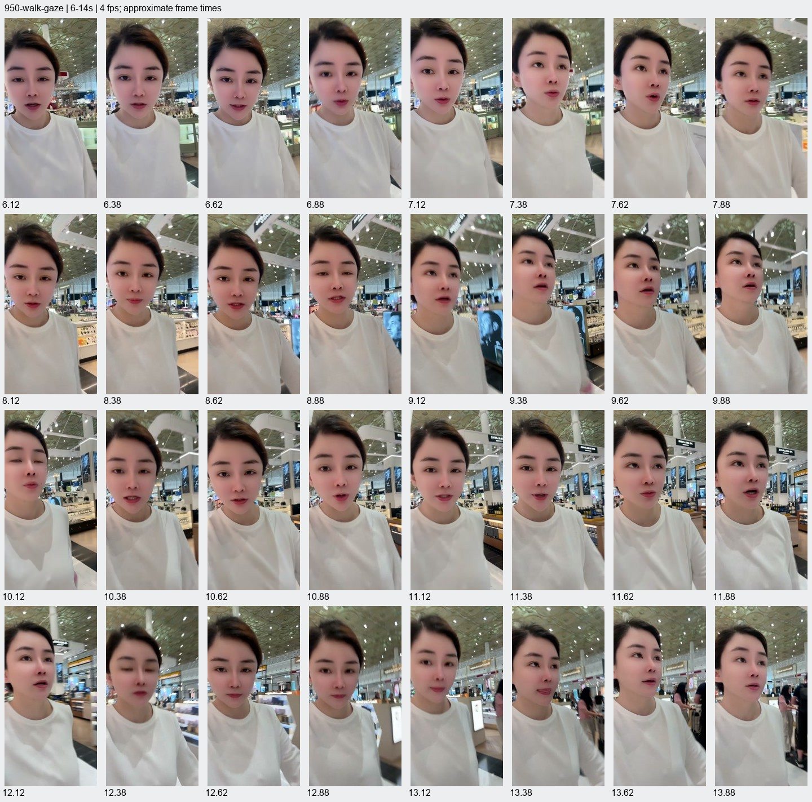 | ||||
| 待确认 | 待核查 | 待核查实词 待核查 近义扩展尚未扩展 | 一手数次短促张开朝镜头，之间略回收，之后再展开横扫并放低。 表情目光：视线在镜头与前进方向之间切换，头随移动轻调。 安排时机：需核对台词后确定 | 待补全 单次情境样例 1 次观察 · 1 个来源组 |
查看原话、视频和动作过程一手数次短促张开朝镜头，之间略回收，之后再展开横扫并放低。 单次情境视觉样例，原声未听审。 待补全原因：已保留原片及视觉动作观察；尚未核查原话、情绪语气和台词与动作的对应关系。
原片证据 · 18–26 秒蓝色服装户外移动自拍，身旁有另一人；仅提取本人空闲手和视线。原片尾部损坏，此区间在已验证前段。 待核查文字：尚未核查 当时语气：待核查 台词与动作的关系：待核查 打开原片并定位来源：src-crx-20261107-952 · 独立来源组：family-crx-20261107-blue-travel 核查限制：动作与表情描述来自抽样图像序列；区间和节奏为近似，未认证连续播放自然程度。、未听审原音频；不能据 ASR、文件名、字幕或口形推定已经核实的原话与语气。、仅为情境样例，不证明习惯频率；不同文件并不自动代表独立拍摄来源。、未做 Seedance 成片生成、人物相似度或口型验证。、用户确认适用于素材中的初瑞雪本人，不覆盖其他入镜人物；只提取本人的动作。 抽帧证据（不代替连续播放和原声核查）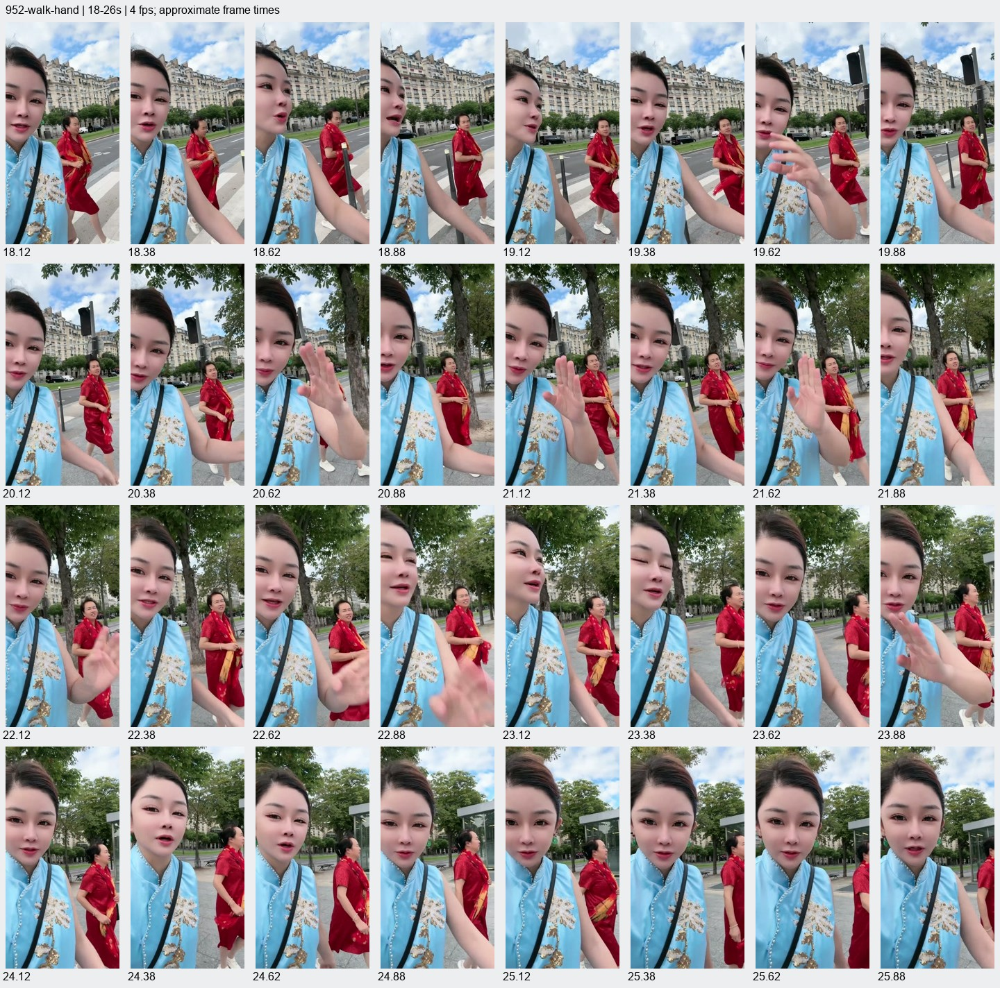 | ||||
| 待确认 | 待核查 | 待核查实词 待核查 近义扩展尚未扩展 | 笑容扩大，头与自拍画面轻晃；手降到胸前后再靠近衣领。 表情目光：约65–69秒嘴角与眼周笑意增强、眼睛变窄；70秒后笑容略收小但保留。 安排时机：需核对台词后确定 | 待补全 单次情境样例 1 次观察 · 1 个来源组 |
查看原话、视频和动作过程笑容扩大，头与自拍画面轻晃；手降到胸前后再靠近衣领。 单次情境视觉样例，原声未听审。 待补全原因：已保留原片及视觉动作观察；尚未核查原话、情绪语气和台词与动作的对应关系。
原片证据 · 64–72 秒蓝色服装车内坐姿，活动手在衣领或胸前附近；此区间在损坏原片的可用前段内。 待核查文字：尚未核查 当时语气：待核查 台词与动作的关系：待核查 打开原片并定位来源：src-crx-20261107-953 · 独立来源组：family-crx-20261107-blue-travel 核查限制：动作与表情描述来自抽样图像序列；区间和节奏为近似，未认证连续播放自然程度。、未听审原音频；不能据 ASR、文件名、字幕或口形推定已经核实的原话与语气。、仅为情境样例，不证明习惯频率；不同文件并不自动代表独立拍摄来源。、未做 Seedance 成片生成、人物相似度或口型验证。、用户确认适用于素材中的初瑞雪本人，不覆盖其他入镜人物；只提取本人的动作。 抽帧证据（不代替连续播放和原声核查）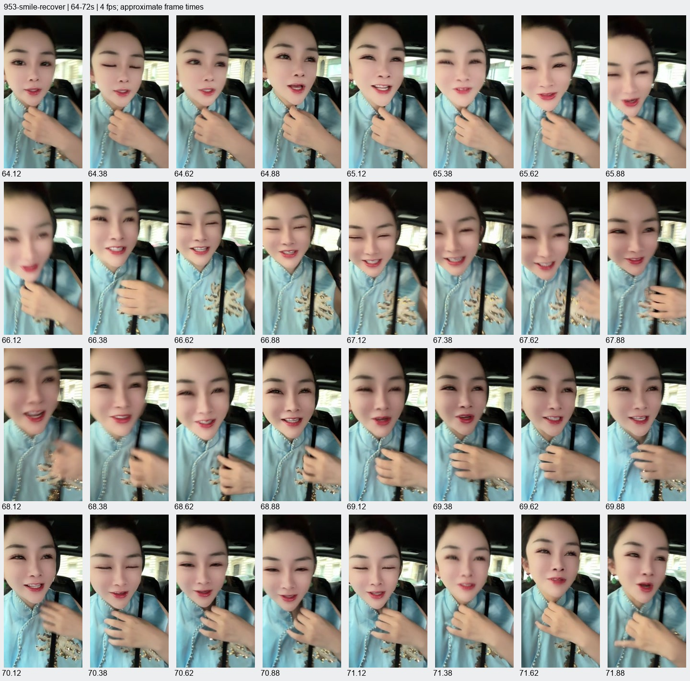 | ||||
| 待确认 | 待核查 | 待核查实词 待核查 近义扩展尚未扩展 | 一手在脸侧比V停留后降低，头随后略向侧方偏转。 表情目光：比V时主要看镜头，落手后短暂侧移视线。 安排时机：需核对台词后确定 | 待补全 单次情境样例 1 次观察 · 1 个来源组 |
查看原话、视频和动作过程一手在脸侧比V停留后降低，头随后略向侧方偏转。 单次情境视觉样例，原声未听审。 待补全原因：已保留原片及视觉动作观察；尚未核查原话、情绪语气和台词与动作的对应关系。
原片证据 · 24.6–29.6 秒阳台附近红色无袖上衣近景，脸有原有贴纸；只记录第一组完整比V和回收。 待核查文字：尚未核查 当时语气：待核查 台词与动作的关系：待核查 打开原片并定位来源：src-crx-20261107-954 · 独立来源组：family-crx-20261107-954 核查限制：动作与表情描述来自抽样图像序列；区间和节奏为近似，未认证连续播放自然程度。、未听审原音频；不能据 ASR、文件名、字幕或口形推定已经核实的原话与语气。、仅为情境样例，不证明习惯频率；不同文件并不自动代表独立拍摄来源。、未做 Seedance 成片生成、人物相似度或口型验证。、用户确认适用于素材中的初瑞雪本人，不覆盖其他入镜人物；只提取本人的动作。 抽帧证据（不代替连续播放和原声核查）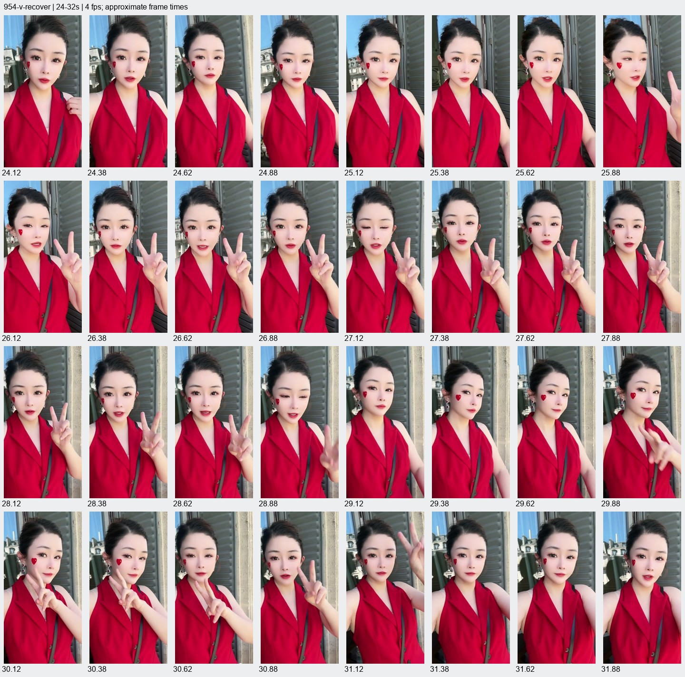 | ||||
| 待确认 | 待核查 | 待核查实词 待核查 近义扩展尚未扩展 | 一手在胸前作小范围手指指示，随后松握，最后停在领口和胸前附近。 表情目光：主要看镜头，头有轻微侧倾，面部保持讲述变化。 安排时机：需核对台词后确定 | 待补全 单次情境样例 1 次观察 · 1 个来源组 |
查看原话、视频和动作过程一手在胸前作小范围手指指示，随后松握，最后停在领口和胸前附近。 单次情境视觉样例，原声未听审。 待补全原因：已保留原片及视觉动作观察；尚未核查原话、情绪语气和台词与动作的对应关系。
原片证据 · 35–41.4 秒户外坐姿、浅色花纹服装讲述；不包含视频开头另一人的表现。 待核查文字：尚未核查 当时语气：待核查 台词与动作的关系：待核查 打开原片并定位来源：src-crx-20261107-957 · 独立来源组：family-crx-20261107-957 核查限制：动作与表情描述来自抽样图像序列；区间和节奏为近似，未认证连续播放自然程度。、未听审原音频；不能据 ASR、文件名、字幕或口形推定已经核实的原话与语气。、仅为情境样例，不证明习惯频率；不同文件并不自动代表独立拍摄来源。、未做 Seedance 成片生成、人物相似度或口型验证。、用户确认适用于素材中的初瑞雪本人，不覆盖其他入镜人物；只提取本人的动作。 抽帧证据（不代替连续播放和原声核查）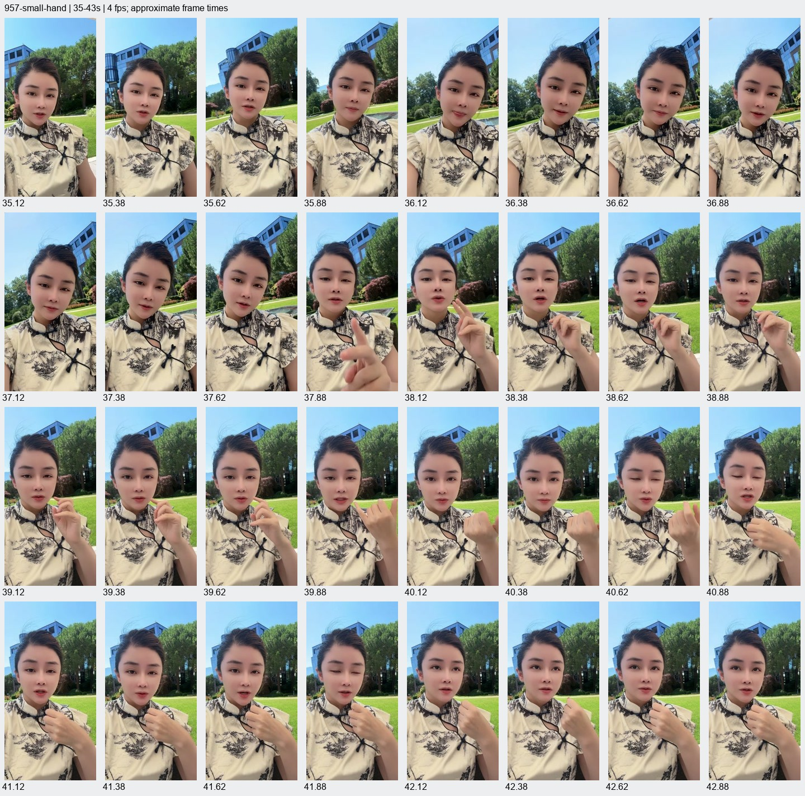 | ||||
| 待审：说明搭配产品 | 待核查 | 待核查实词 搭配、面霜 近义扩展搭配这个一起用、接着用这款面霜 | 空闲手食指指向罐身正面后收回，罐移至胸前，随后双手配合开盖。 表情目光：先看镜头，手转入操作时视线落向罐身；表情随讲话变化，语气未核查。 安排时机：约 0.5–1.5 秒指罐，约 2 秒降低容器，3.5 秒附近外盖分离。 | 待补全 单次情境样例 1 次观察 · 1 个来源组 |
查看原话、视频和动作过程待核查：机器转写的“搭配的面霜”区间与开头指罐相邻，尚未对原声核实动作发起和语气。 待补全原因：类别与关键词仅由未复核机器文字形成候选；原声、情绪语气和精确对应尚未核查。
原片证据 · 0–4.5 秒用户确认本人；B5面霜/4.mp4 中的近景讲述窗口。 待核查文字：6A醇搭配的面霜是A醇B5面霜 当时语气：待核查 台词与动作的关系：待核查：机器转写的“搭配的面霜”区间与开头指罐相邻，尚未对原声核实动作发起和语气。 打开原片并定位来源：src-crx-20261107-cream-b5-4 · 独立来源组：family-crx-20261107-cream-b5-4 核查限制：本轮工具返回不支持音频输入，未完成原声听审。、机器文字有明显误识别；不静默纠正后声称听审通过。、动作观察来自抽帧序列，节奏近似，未认证连续播放或生成效果。 抽帧证据（不代替连续播放和原声核查）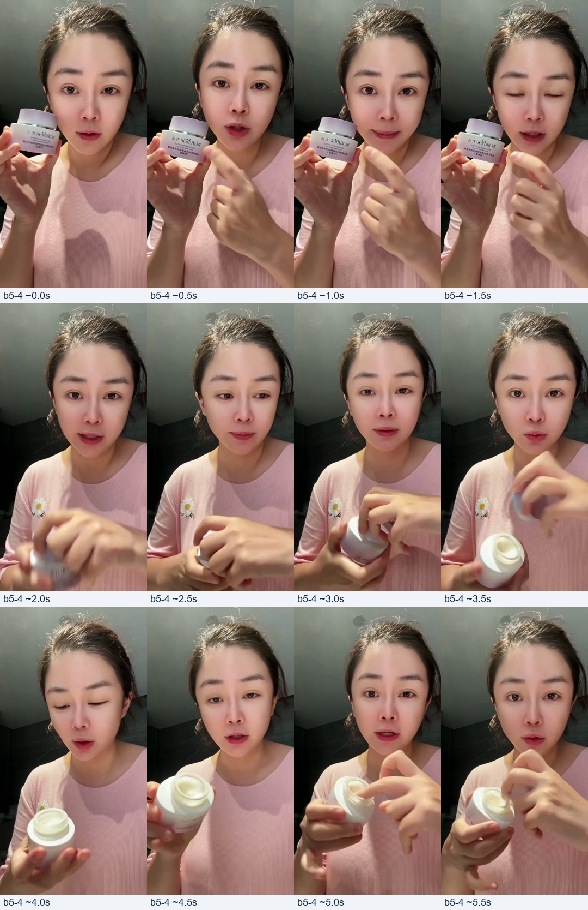 | ||||
| 待审：表达个人推荐 | 待核查 | 待核查实词 我觉得、更好用 近义扩展我更喜欢这款、这款我更推荐 | 容器正面朝镜头，在脸侧略举近并调整角度，手指持续扶稳下缘，接近段末降低产品。 表情目光：主要面对镜头，偶有短暂转眼，表情保持讲话变化。 安排时机：约 13–18 秒以持稳和距离微调为主，随后产品逐渐离开画面；对应台词估计 14.88–19.20 秒。 | 待补全 单次情境样例 1 次观察 · 1 个来源组 |
查看原话、视频和动作过程待核查：机器转写含“我觉得我这个更好用”，与脸侧持品窗口重叠；没有据此认定固定动作或产品优劣。 待补全原因：类别与关键词仅由未复核机器文字形成候选；原声、情绪语气和精确对应尚未核查。
原片证据 · 12–19.5 秒用户确认本人；辛等等樱桃面霜/3.mp4 中的近景讲述窗口。 待核查文字：然后就标那个来的 但我觉得我这个更好用 这就是心脏的品牌 当时语气：待核查 台词与动作的关系：待核查：机器转写含“我觉得我这个更好用”，与脸侧持品窗口重叠；没有据此认定固定动作或产品优劣。 打开原片并定位来源：src-crx-20261107-cream-cherry-3 · 独立来源组：family-crx-20261107-cream-cherry-3 核查限制：本轮工具返回不支持音频输入，未完成原声听审。、机器文字有明显误识别；不静默纠正后声称听审通过。、动作观察来自抽帧序列，节奏近似，未认证连续播放或生成效果。 抽帧证据（不代替连续播放和原声核查）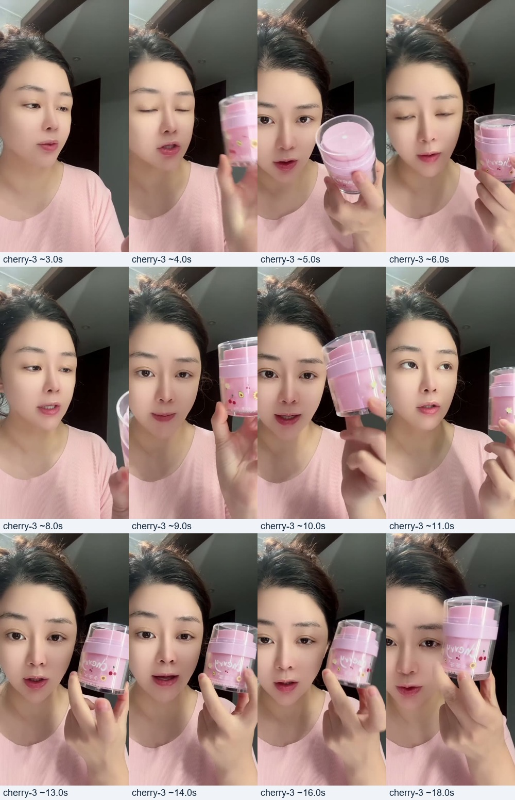 | ||||
| 待审：强调产品独有性 | 待核查 | 待核查实词 除了咱家、还没有别人 近义扩展这个特点只有我们做、这是我们这款的不同之处 | 手指在脸侧作指示，随后短暂展开手掌再收回松握，手停在面颊旁的低一些位置。 表情目光：视线短暂侧上看后回到镜头，讲话中眉眼有变化；未核查声音的强调程度。 安排时机：约 20–21 秒指形变化，22 秒收握，23 秒再次开掌，24–25 秒回落。 | 待补全 单次情境样例 1 次观察 · 1 个来源组 |
查看原话、视频和动作过程待核查：机器文字中的排他性表达与该手势窗口重叠；不据此认可“独有”说法，也不认定真人固定习惯。 待补全原因：类别与关键词仅由未复核机器文字形成候选；原声、情绪语气和精确对应尚未核查。
原片证据 · 19.5–25 秒用户确认本人；银霜/1.mp4 中的近景讲述窗口。 待核查文字：咱家是国内的话就是 除了咱家 目前还没有别人给你做这叶台银 当时语气：待核查 台词与动作的关系：待核查：机器文字中的排他性表达与该手势窗口重叠；不据此认可“独有”说法，也不认定真人固定习惯。 打开原片并定位来源：src-crx-20261107-cream-silver-1 · 独立来源组：family-crx-20261107-cream-silver-1 核查限制：本轮工具返回不支持音频输入，未完成原声听审。、机器文字有明显误识别；不静默纠正后声称听审通过。、动作观察来自抽帧序列，节奏近似，未认证连续播放或生成效果。 抽帧证据（不代替连续播放和原声核查）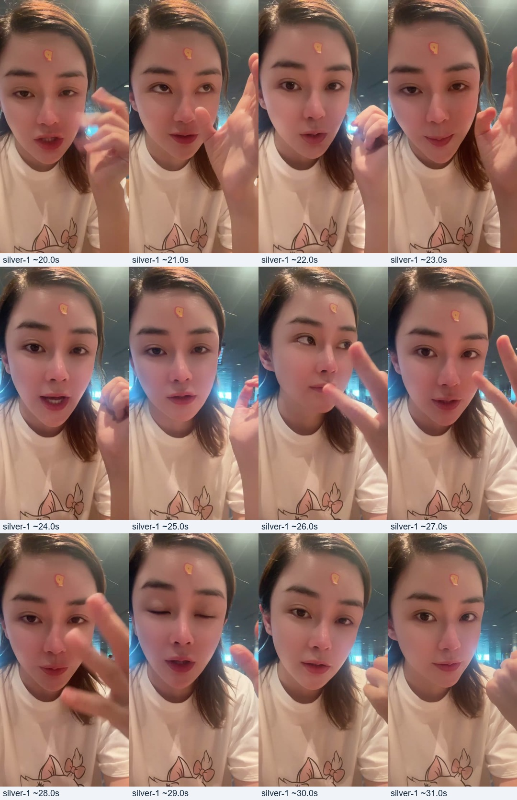 | ||||
| 待审：引导购买 | 待核查 | 待核查实词 点击这里、去拍 近义扩展赶紧拍、快下单、想要的点下面链接 | 身体略前探，活动手抬起并以食指向画面下方作短指示，随后降低退出脸前。 表情目光：主要看镜头，落手后嘴角略带笑，视线继续与镜头交流。 安排时机：约 84.5–85.0 秒可见指示，85.5 秒附近手已放低；机器句时约 84.78–86.02 秒，未听审。 | 待补全 单次情境样例 1 次观察 · 1 个来源组 |
查看原话、视频和动作过程待核查：机器句“点击这里去拍吧”附近出现向下指示；这是候选关系，不是已核实原话或反复习惯。 待补全原因：类别与关键词仅由未复核机器文字形成候选；原声、情绪语气和精确对应尚未核查。
原片证据 · 83.5–86.5 秒用户确认本人；水光霜/8.mp4 中的近景讲述窗口。 待核查文字：点击这里去拍吧 当时语气：待核查 台词与动作的关系：待核查：机器句“点击这里去拍吧”附近出现向下指示；这是候选关系，不是已核实原话或反复习惯。 打开原片并定位来源：src-crx-20261107-cream-waterglow-8 · 独立来源组：family-crx-20261107-cream-waterglow-8 核查限制：本轮工具返回不支持音频输入，未完成原声听审。、机器文字有明显误识别；不静默纠正后声称听审通过。、动作观察来自抽帧序列，节奏近似，未认证连续播放或生成效果。 抽帧证据（不代替连续播放和原声核查）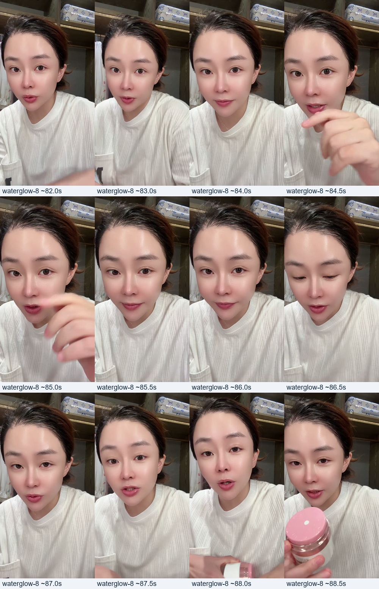 | ||||